← 返回阅读库 · 原论文目录
论文讲解阅读文档 · 论文精读 · v237
具身智能奠基之作：Do as I Can, Not as I Say
视频时长 00:59:51；讲解文字 17,641 字符；提取讲解画面 603 张。按视频原顺序阅读，每段文字保留时间戳。
文字来自整段视频的自动语音转写，按自然停顿分段，并与 PPT / 论文页面 / 演示画面对齐。未将讲解压缩为摘要；术语、数字和口述公式请结合画面及原论文核对。 阅读稿已校正规范部分明确术语误识别；原始逐字稿和每处修改记录另行保留。
讲解画面为源视频截图（640×360），不是可编辑 PPT 文件。全片按每秒 2 帧扫描内容变化，逐步展开页保留；连续动画保留代表画面。清晰度受源视频限制。
下载完整资料包 · 含离线 HTML、PDF、Word、全部 PPT 画面和字幕。
原论文与材料
Do As I Can, Not As I Say: Grounding Language in Robotic Affordances · 下载完整 PDF（34 页）
按时间阅读
00:00:00–00:00:04 · 画面 001
00:00:00–00:00:04 · 画面 001我个人感觉在今年年底之前这个整个人型机器人 AI 会达到一个新的量级。机器人作为具备实体的 AI 系统，在语音和视觉之外，我们还把动作模态也集成到了模型当中。
00:00:04–00:00:08 · 画面 002
00:00:04–00:00:08 · 画面 00200:00:08–00:00:12 · 画面 003
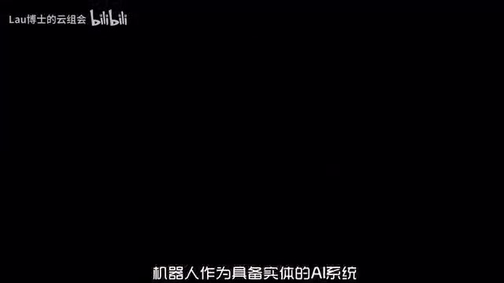
00:00:08–00:00:12 · 画面 00300:00:12–00:00:13 · 画面 004
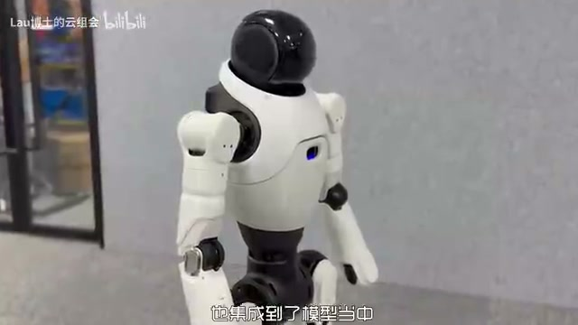
00:00:12–00:00:13 · 画面 004当语术科技的人形机器人在春马的舞台上扭出中国的秧歌，智慧军的钢铁侠机械臂掀起了开源的革命，这些案例都一一说明了具身智能的浪潮已经势不可挡了。你是否有想过这些能跑酷会炒菜，甚至是扛起菜商物资的机器人背后都隐藏着一篇神级的论文？今天就让我们来一起揭开这枚引爆具身智能革命的思想核弹具身智能的奠基之作 Do as I can, not as I say。
00:00:13–00:00:41 · 画面 005
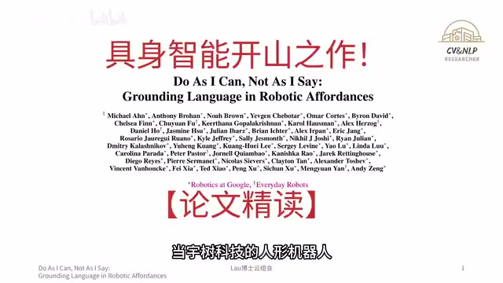
00:00:13–00:00:41 · 画面 00500:00:41–00:00:58 · 画面 006
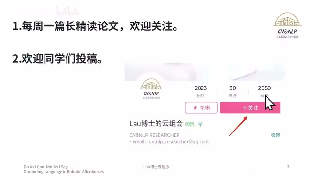
00:00:41–00:00:58 · 画面 006欢迎来到力武博士的云组会本期是我们的论文精读系列的第五期非常感谢大家的支持我们每周都至少将有一篇高质量的论文精读发布出来让各位同学每周都有新的论文可以交流欢迎关注我们成为云组会的一员来看到文章的摘要部分摘要的部分强调大语言模型它肯定是非常的 powerful 的它这些大语言模型里面的知识对于是这样语言表达的这种高级的
00:00:58–00:01:02 · 画面 007
00:00:58–00:01:02 · 画面 00700:01:02–00:01:04 · 画面 008
00:01:02–00:01:04 · 画面 00800:01:04–00:01:07 · 画面 009
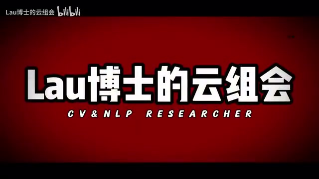
00:01:04–00:01:07 · 画面 00900:01:07–00:01:40 · 画面 010
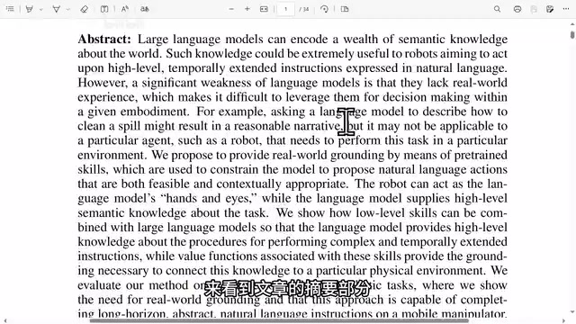
00:01:07–00:01:40 · 画面 010跟这种时间延伸指令相关的这种场合的机器人的场景是非常有用的。但是呢，这个语言模型呢，它有一个问题呢，就是它缺乏这种现实世界的这种经验。那变得呢，它在让这个机器人它去决策的时候呢，会变得非常的困难。那接下来呢，那个作者呢，他就举了一个例子，那就是说。
00:01:40–00:01:42 · 画面 011
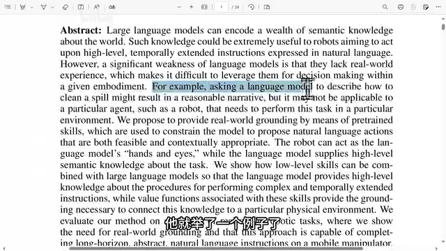
00:01:40–00:01:42 · 画面 01100:01:42–00:01:43 · 画面 012
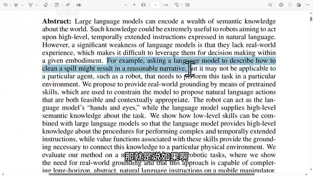
00:01:42–00:01:43 · 画面 01200:01:43–00:01:44 · 画面 013
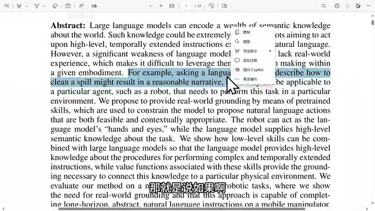
00:01:43–00:01:44 · 画面 013如果去给这个语言模型去提个问题，说是怎么样去清理一些溢出，那它可能会给一个我们人能正常理解，但是呢，它是不能让这个机械人去直接执行的一个回应。那本文的作者呢，就提出来了说，他们呢，就提议呢，说可以通过这个预训练的这个技能呢，提供给这个现实之间。
00:01:44–00:01:58 · 画面 014
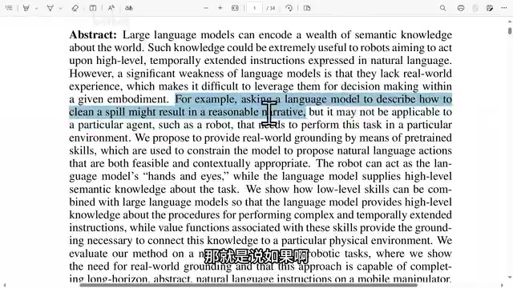
00:01:44–00:01:58 · 画面 01400:01:58–00:02:01 · 画面 015
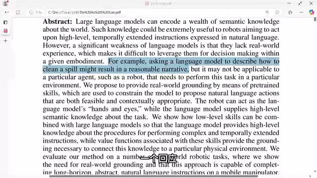
00:01:58–00:02:01 · 画面 01500:02:01–00:02:04 · 画面 016
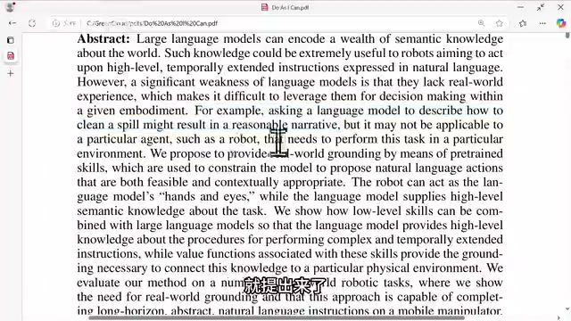
00:02:01–00:02:04 · 画面 01600:02:04–00:02:05 · 画面 017
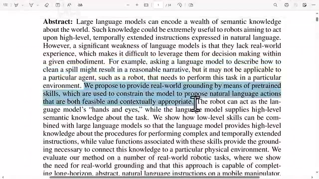
00:02:04–00:02:05 · 画面 01700:02:05–00:02:20 · 画面 018
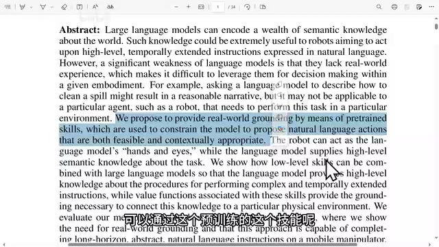
00:02:05–00:02:20 · 画面 018这个技能是用于约束模型提出即可行，然后又要能符合上下文的一个自然语言的行动。机器人的角色就可以作为是这种语言模型的手跟眼睛。语言模型的话，主要是提供一些 high level 也就是高级语义上的一些跟任务相关的知识。
00:02:20–00:02:22 · 画面 019
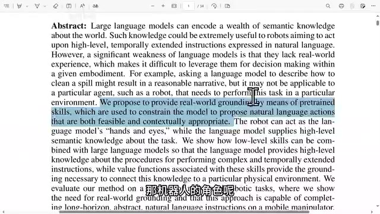
00:02:20–00:02:22 · 画面 01900:02:22–00:02:23 · 画面 020
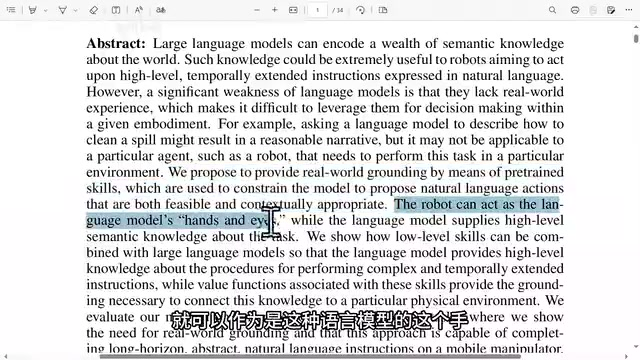
00:02:22–00:02:23 · 画面 02000:02:23–00:02:27 · 画面 021
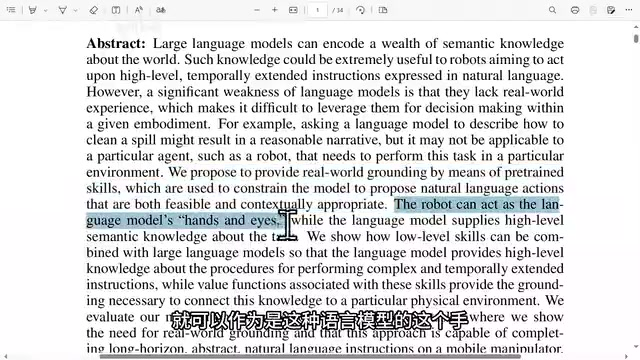
00:02:23–00:02:27 · 画面 02100:02:27–00:02:34 · 画面 022
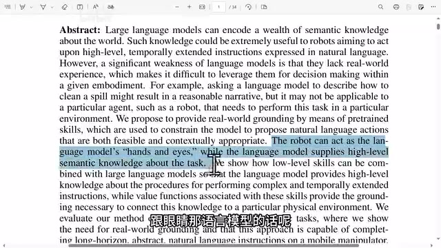
00:02:27–00:02:34 · 画面 022那接下来的这一段呢，那作者呢，主要就是描述了他们是如何将这种低级的这种 low level 的这种技能呢，跟大模型的语言呢相结合，使得了这个语言模型提供关于机型复杂且时间延长的这种指令程序的高级知识，同时呢，跟这些技能相关的价值函数呢，又提供了连接知识跟特定物理环境所需要的这种联系。
00:02:34–00:02:36 · 画面 023
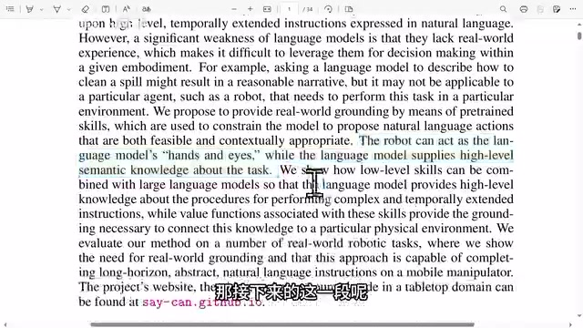
00:02:34–00:02:36 · 画面 02300:02:36–00:02:37 · 画面 024
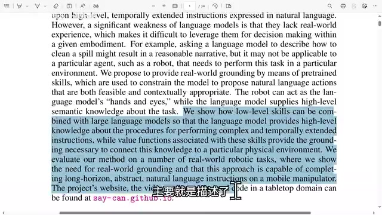
00:02:36–00:02:37 · 画面 02400:02:37–00:02:38 · 画面 025
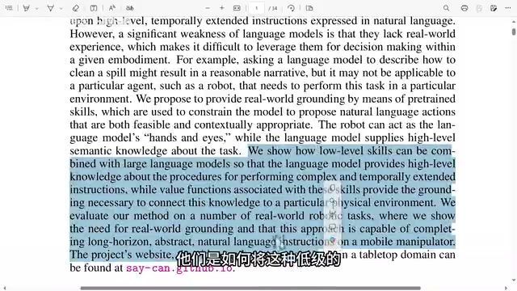
00:02:37–00:02:38 · 画面 02500:02:38–00:02:39 · 画面 026
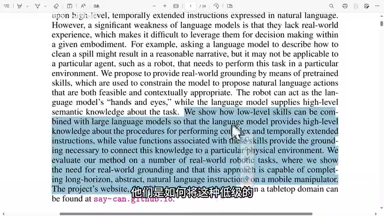
00:02:38–00:02:39 · 画面 02600:02:39–00:03:04 · 画面 027
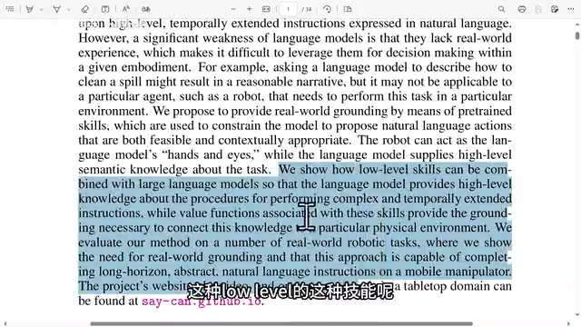
00:02:39–00:03:04 · 画面 027那作者呢，在这个多个场合上多个任务上去评估了，发现呢，他们的这个是有优势的，然后又附上了这个 Gear 上面的一个链接。那引言的第一段提到近期的这个 LM 大语言模型呢，在训练的方面取得了很大的进展，取得了很多的这种复杂的文本啊。
00:03:04–00:03:10 · 画面 028
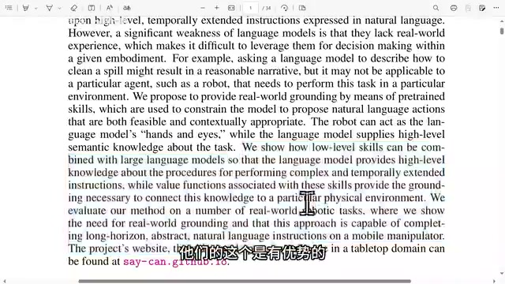
00:03:04–00:03:10 · 画面 02800:03:10–00:03:34 · 画面 029
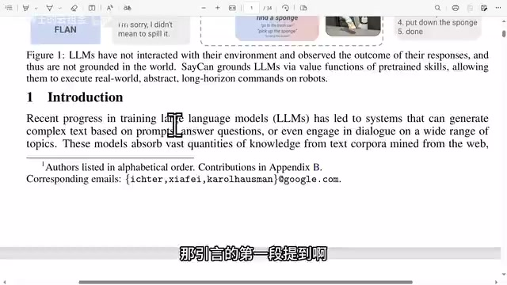
00:03:10–00:03:34 · 画面 029或者是回答问题，甚至是展开这种具体的对话，这些模型从网络当中挖掘了很多的这些文本去训练。这类模型作者们就想，能不能够 LMS 居然有这么 powerful 的能力，能不能用在这种机器人的现实生活当中来执行这种复杂任务。
00:03:34–00:03:36 · 画面 030
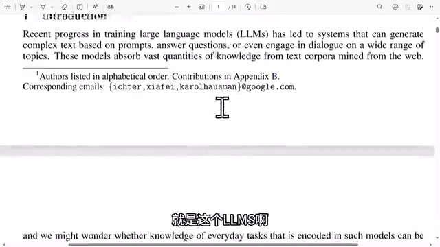
00:03:34–00:03:36 · 画面 03000:03:36–00:03:54 · 画面 031
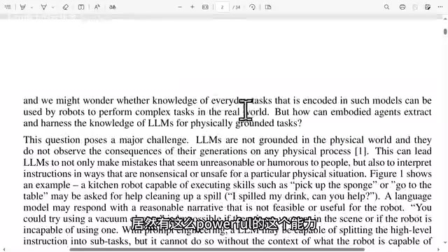
00:03:36–00:03:54 · 画面 031那又怎么样从他们的这个角度去提取出这种。完成这个基础的一些物理任务的这些内容呢。然后我们来看到第二段。那在这里呢
00:03:54–00:04:40 · 画面 032
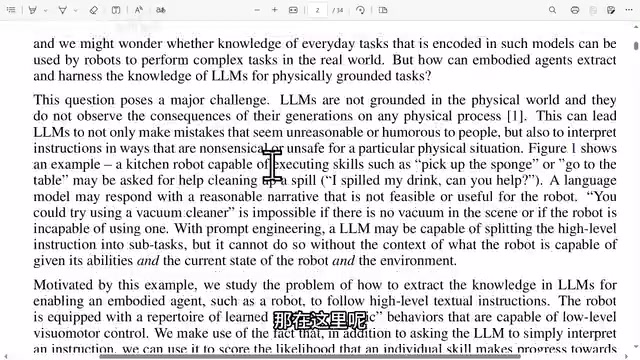
00:03:54–00:04:40 · 画面 032第二段就提到了这个 LM 呢跟以前我们提到的这个 Cosmos Reason 1 一样。LM 的这个训练的这个语境呢。它并不是基于这种物理世界的这种语境的。也就是说他们不会去观察他们生成的内容。对于这个物理世界的这种因果的这种关系。那可能呢就是导致说这个 LM 呢。就不会对这个人类。就说出了一些不合理的话的错误呢。来去做一些正确的这种回应。
可能呢有时候还是会以一种。没有意义或是不安全的这种方式来去解释。那稍后呢我们就去来看一下图一是一个什么样的这个例子。那这里提到呢图一啊它是一个展示的这个例子。
00:04:40–00:04:41 · 画面 033
00:04:40–00:04:41 · 画面 033是说一个能够执行拿起海绵。
00:04:41–00:04:59 · 画面 034
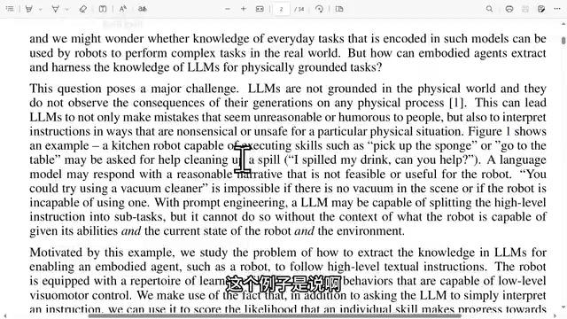
00:04:41–00:04:59 · 画面 034或是走到桌子旁边的这个技能的这个厨房机器人呢。可能就会被要求去清理一些溢出物。说这个人呢他问了个问题说撒了饮料能不能让这个机器人帮一下。那这个语言模型呢。可能会给出一些对机器人来说是不可行的。
00:04:59–00:05:28 · 画面 035
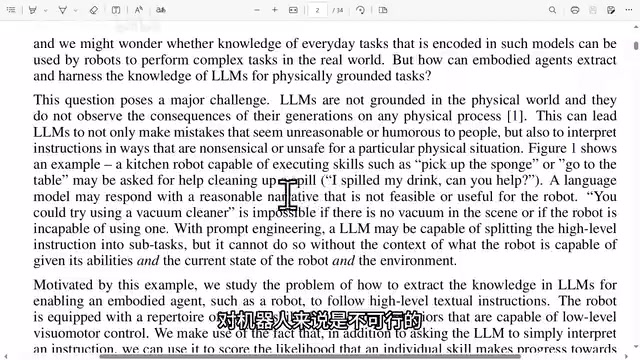
00:04:59–00:05:28 · 画面 035或是没有用的一些叙述。可能那个机器人他或者那个 Respond就是说你可以用一些吸尘器显然这个是没有用的所以呢他在这里呢就提出了要通过了这个提示的一个工程要将要把这个 LM 呢就对于这些人类提出的这个问题把高级指令呢拆分成一系列的这种质任务显然呢就对于这么一个问题啊是要去专门的去进行一个设计的那我们来看一下图一
00:05:28–00:05:31 · 画面 036
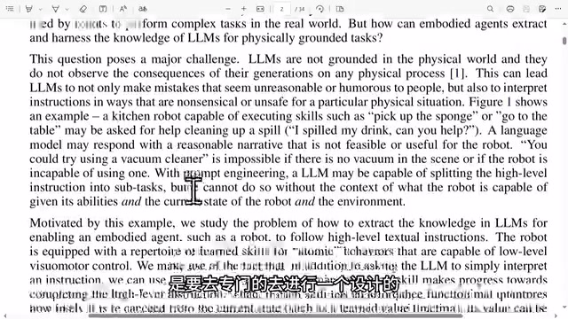
00:05:28–00:05:31 · 画面 03600:05:31–00:06:41 · 画面 037
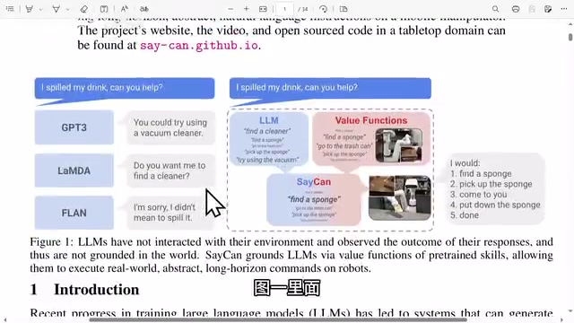
00:05:31–00:06:41 · 画面 037图一里面他就演示了这个 LM 现在目前所面临的一些困境啊就是用到这种具身智能的这个场景里面呢他会有一些困境啊就刚刚提到的那这里有三个代表性的这个大模型的一个回复第三呢就是说你可以拿这个吸尘器啊那实际上他们都是啊这个这个 LaMDA 的这个模型呢就说你是不是让我去找一个这个清洁的这样子的一个东西这个 flam 很明显这个回答也是有问题的放到这个 robot 上面运行的话这里右边就是右手边的就是作者提出来的这个方法他同样的也是提问了同样的问题啊那他呢就要求去引导这个 LM 呢就把这个问题的拆分成这些对于这个机械人来说他可以去做的一些内容可以执行的内容然后呢右左边另外一个呢就是他通过两个方面的这个结合还有一个 value function 就会给这些回答去打一个分数然后呢结合起来就让他知道先执行什么后执行什么然后就得到一个正确的这样子的一个结果我们继续来看啊
00:06:41–00:06:42 · 画面 038
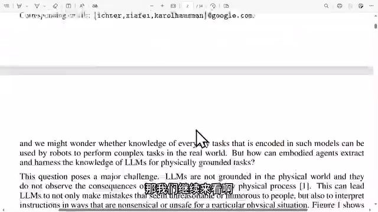
00:06:41–00:06:42 · 画面 03800:06:42–00:06:44 · 画面 039
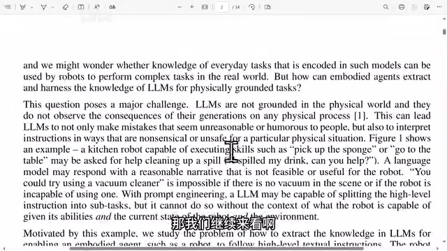
00:06:42–00:06:44 · 画面 03900:06:44–00:06:45 · 画面 040
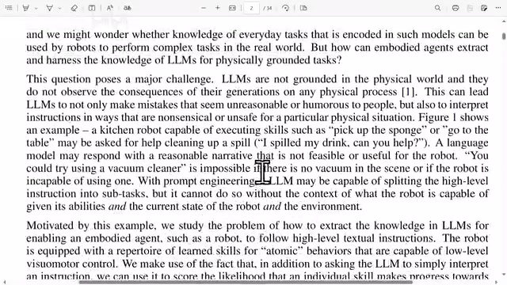
00:06:44–00:06:45 · 画面 040那通过刚刚的这个案例的这个描述呢就作者们就受到这个启发啊说这个他也他们那就研究了怎么样呢才能让这个具身智能的这些机器人他怎么去让他们基于这种高层次的这个文本指令啊去变成就是机器人可以去执行了一系列的这种低级的这种比较简单的一个指令
00:06:45–00:07:02 · 画面 041
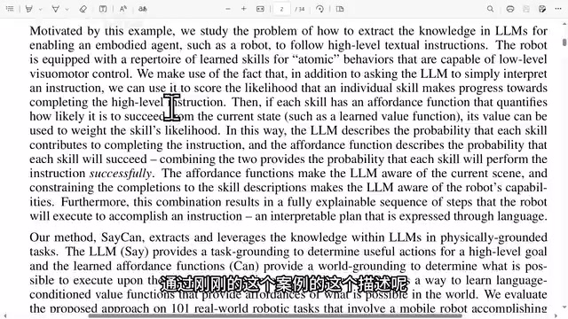
00:06:45–00:07:02 · 画面 04100:07:02–00:07:03 · 画面 042
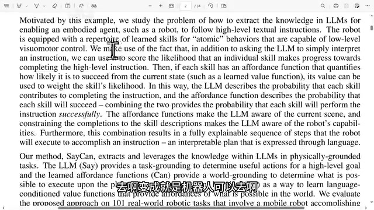
00:07:02–00:07:03 · 画面 04200:07:03–00:07:39 · 画面 043
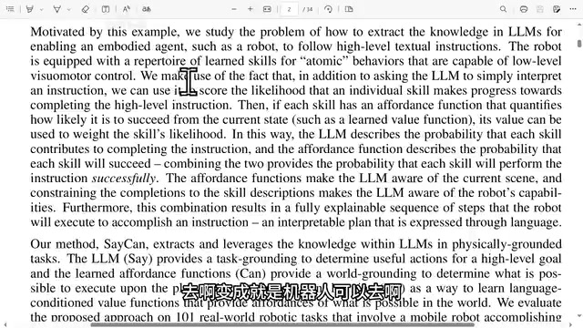
00:07:03–00:07:39 · 画面 043其实这段话就是我刚刚提到的他们除了说大语言模型它拆分成低级的这种可执行的这种语言以外呢他还会去给每一个的这个 step 去打分就是这个所谓的这个价值函数啊那对于他们来每个技能的去做一个加权然后呢去按照这个一定的比较符合逻辑的这种正确的去顺序呢去一步一步的执行那也是呢为这种机器人的执行的提供了这种
00:07:39–00:07:40 · 画面 044
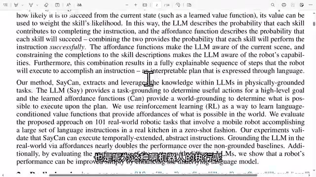
00:07:39–00:07:40 · 画面 044可执行的这个可解释性
00:07:40–00:07:41 · 画面 045
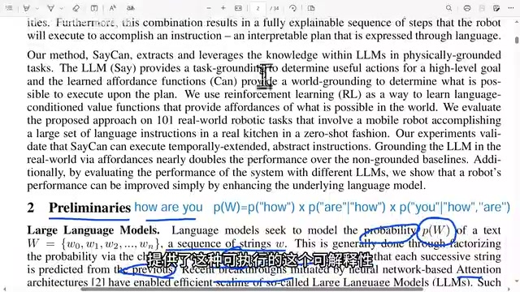
00:07:40–00:07:41 · 画面 04500:07:41–00:07:43 · 画面 046
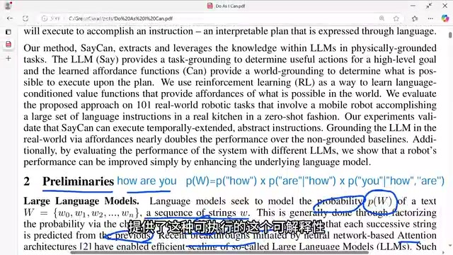
00:07:41–00:07:43 · 画面 046那这个作者的提出了这个方法呢叫 SayCan
00:07:43–00:07:46 · 画面 047
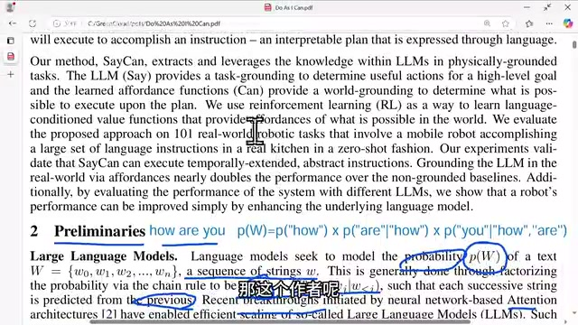
00:07:43–00:07:46 · 画面 04700:07:46–00:08:17 · 画面 048
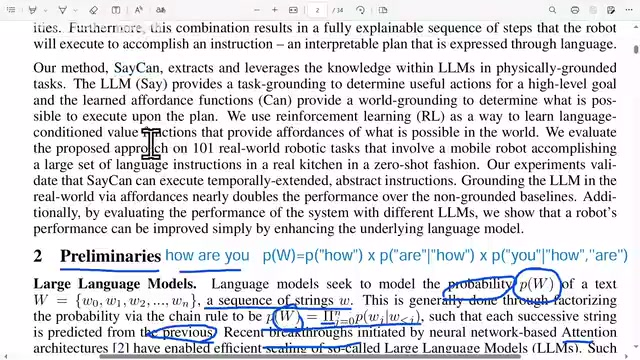
00:07:46–00:08:17 · 画面 048那在物理的这个基础任务中呢提取和利用了大语言模型里面的这种知识那这个 lmsave 的这个方面呢提供的任务的这个基础确定了高层次的这个目标和有用的这种行动学到的这个可供性的这种功能 cam是提供这个世界基础那确定什么东西呢他是可以有可能是可以这样子执行同样的他也提到了他们这里呢用了这种强化学习的这个方法去去学习语言条件的价值函数这种方法
00:08:17–00:08:35 · 画面 049
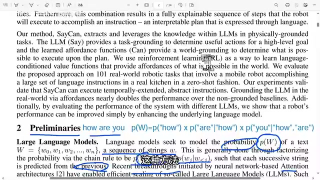
00:08:17–00:08:35 · 画面 049那这些函数呢使得呢就是这个模型它在世界里面呢是可以实现的他们呢在 101 个的真实世界的这种机器人任务上做了评估然后这些任务涉及的这个移动的这种机器人在这个零样本的方式下的完成了大量的这种语言的这种指令在一个真实的这个厨房的环境当中那他们的通过实验现场 SayCan 能够长时间的能够执行实践上的拓展的一些抽象的指令通过了这个大语言模型的跟这个现实世界的结合那性能呢基本上是会比那很大幅的这种提升那他们当然也做了一些别的一些评估那这篇文章呢那就到这里就正式的开始了这个第二章
00:08:35–00:08:37 · 画面 050
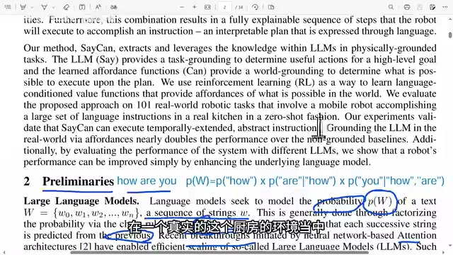
00:08:35–00:08:37 · 画面 05000:08:37–00:09:01 · 画面 051
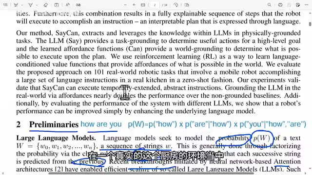
00:08:37–00:09:01 · 画面 05100:09:01–00:09:04 · 画面 052
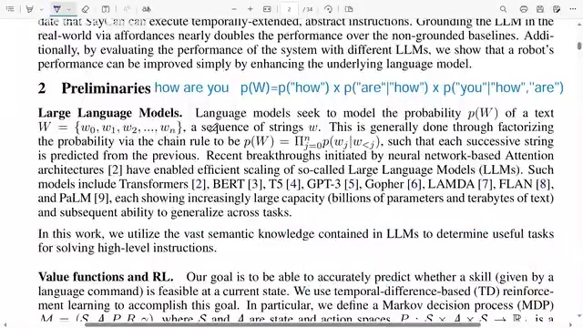
00:09:01–00:09:04 · 画面 052预备知识那第一个部分呢就是讲了这个大语言模型他说呢这个语言模型的这个目标呢就是要 model 一个 text 的这个 probability 叫 p 的 w 也就是这个文本呢他要去构建一个概率的这样子的一个形式那这个 w 呢里面有 w0 w1 w2 那这个 w 呢代表的是这个一系列的一个字符串
00:09:04–00:09:13 · 画面 053
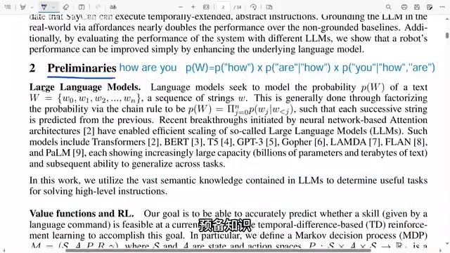
00:09:04–00:09:13 · 画面 05300:09:13–00:09:14 · 画面 054
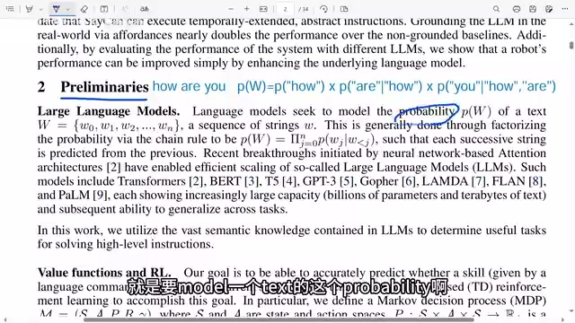
00:09:13–00:09:14 · 画面 05400:09:14–00:09:15 · 画面 055
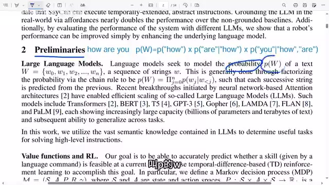
00:09:14–00:09:15 · 画面 05500:09:15–00:09:25 · 画面 056
00:09:15–00:09:25 · 画面 05600:09:25–00:09:26 · 画面 057
00:09:25–00:09:26 · 画面 05700:09:26–00:09:32 · 画面 058
00:09:26–00:09:32 · 画面 058那我看到了那就是他们是通过一个练习的法则了得到这样子的一个形式那我们来举一个例子来看一下这个 PW 具体它是一个什么的意思啊假如说我们这个大的 W 呢等于 Howard U 三个单词的话那我们用这个形式化表达去做这个的时候呢我们就可以
00:09:32–00:09:35 · 画面 059
00:09:32–00:09:35 · 画面 05900:09:35–00:09:40 · 画面 060
00:09:35–00:09:40 · 画面 06000:09:40–00:09:42 · 画面 061
00:09:40–00:09:42 · 画面 06100:09:42–00:10:31 · 画面 062
00:09:42–00:10:31 · 画面 062看到用这个为例子那 PW 呢就可以看作是这个号 P 号然后这个是连成的意思然后就是 P 这个在号情况下求这个 R 的这个一个概率然后后面这个同理就这个主要就是这个地方会有一点这个疑惑或是疑问这个意思呢就是说小于 J 的这些元素它都需要列出来那这个我们可以看到 U 呢是如果我们是从 0 开始算的话那这个 u 的这个位置是 2 那它 2 的这个位置呢就小于 2 的都要列出来那就大概表达是这么一个意思那就是说了每个的这样子的一个连续的这个字符串它的这个预测就是后一个都是通过前一个来得到的那近期很多的这个重大的一些工作就是通过这种 attention 的这种结构使得了这个大模型它的这个
00:10:31–00:10:32 · 画面 063
00:10:31–00:10:32 · 画面 06300:10:32–00:10:33 · 画面 064
00:10:32–00:10:33 · 画面 06400:10:33–00:10:35 · 画面 065
00:10:33–00:10:35 · 画面 06500:10:35–00:10:38 · 画面 066
00:10:35–00:10:38 · 画面 06600:10:38–00:10:43 · 画面 067
00:10:38–00:10:43 · 画面 067很有效的去做了这种扩展比如说像这个 Transformer HubGPT-3 等等一系列的这些模型然后这些模型就是 Increasing 就是这个 Large 的 Capability 就越来越大他们这个容量这个是 Billion 的这个 ParameterTB 级别的这个文本展现出了这个这种跨任务里面的这种能力
00:10:43–00:10:45 · 画面 068
00:10:43–00:10:45 · 画面 06800:10:45–00:10:54 · 画面 069
00:10:45–00:10:54 · 画面 06900:10:54–00:10:57 · 画面 070
00:10:54–00:10:57 · 画面 07000:10:57–00:11:03 · 画面 071
00:10:57–00:11:03 · 画面 07100:11:03–00:11:06 · 画面 072
00:11:03–00:11:06 · 画面 07200:11:06–00:11:07 · 画面 073
00:11:06–00:11:07 · 画面 07300:11:07–00:11:09 · 画面 074
00:11:07–00:11:09 · 画面 07400:11:09–00:11:10 · 画面 075
00:11:09–00:11:10 · 画面 07500:11:10–00:11:13 · 画面 076
00:11:10–00:11:13 · 画面 076那在这项工作当中呢作者说啊他们用这个大语言模型里面的这种丰富的这个语义呢来去确定啊还有解决这种 high level 的这种有指令的这种任务
00:11:13–00:11:17 · 画面 077
00:11:13–00:11:17 · 画面 07700:11:17–00:11:22 · 画面 078
00:11:17–00:11:22 · 画面 07800:11:22–00:11:24 · 画面 079
00:11:22–00:11:24 · 画面 07900:11:24–00:11:25 · 画面 080
00:11:24–00:11:25 · 画面 08000:11:25–00:11:26 · 画面 081
00:11:25–00:11:26 · 画面 081接下来呢看到这个 value function 跟这个强化学习啊也就是这个价值函数跟强化学习那作者说呢他们的目标啊是可以呢让这个准确的去预测呢一个技能啊那这个技能呢是在这个当前状态下啊要准确的这个预测出来预测的这个技能呢是否可行那作者用了这个 temporal difference 的 base 的这种 reinforcement learning 也就是呢
00:11:26–00:11:29 · 画面 082
00:11:26–00:11:29 · 画面 08200:11:29–00:11:30 · 画面 083
00:11:29–00:11:30 · 画面 08300:11:30–00:11:40 · 画面 084
00:11:30–00:11:40 · 画面 08400:11:40–00:11:41 · 画面 085
00:11:40–00:11:41 · 画面 08500:11:41–00:11:45 · 画面 086
00:11:41–00:11:45 · 画面 08600:11:45–00:11:49 · 画面 087
00:11:45–00:11:49 · 画面 08700:11:49–00:11:50 · 画面 088
00:11:49–00:11:50 · 画面 08800:11:50–00:11:52 · 画面 089
00:11:50–00:11:52 · 画面 08900:11:52–00:12:04 · 画面 090
00:11:52–00:12:04 · 画面 090这个时间差分的一个强化学习来完成这个目标那他们呢就定义了这个马可夫的一个决策过程啊也就是 MDP 表达成了这样子的一个形式我们来看里面的这个符号啊都代表的是什么 S 和 A 呢分表代表的是这个 State 还有这个 Action 的这个 Space 也就是空间啊还有这个动作就是状态 State 就是状态 Action 呢就是这个动作
00:12:04–00:12:13 · 画面 091
00:12:04–00:12:13 · 画面 09100:12:13–00:12:20 · 画面 092
00:12:13–00:12:20 · 画面 09200:12:20–00:12:21 · 画面 093
00:12:20–00:12:21 · 画面 09300:12:21–00:12:22 · 画面 094
00:12:21–00:12:22 · 画面 09400:12:22–00:12:26 · 画面 095
00:12:22–00:12:26 · 画面 095P 呢代表的是这个状态的一个转移的一个函数 R 呢代表的是一个 reward 的一个 function 也就是奖励函数这个γ呢就是一个折扣因子那这个 TD 的这个 method 呢它的这个目标呢是去学习这个 state 状态或者是 state action 的这个也就是状态动作的一个 value 的这个 function 那表示成了这个形式
00:12:26–00:12:30 · 画面 096
00:12:26–00:12:30 · 画面 09600:12:30–00:12:37 · 画面 097
00:12:30–00:12:37 · 画面 09700:12:37–00:12:38 · 画面 098
00:12:37–00:12:38 · 画面 09800:12:38–00:12:39 · 画面 099
00:12:38–00:12:39 · 画面 09900:12:39–00:12:45 · 画面 100
00:12:39–00:12:45 · 画面 10000:12:45–00:12:53 · 画面 101
00:12:45–00:12:53 · 画面 10100:12:53–00:12:58 · 画面 102
00:12:53–00:12:58 · 画面 102表示呢就是 State 从这个 S 开始然后做了 A 的这个动作按照呢这个策略 Pi 的这种行动的这个折扣的总和的这个 Weaver 啊也就是奖励它呢可以表达成这样子的一个形式那这个 Q function 呢可以通过这个动态规划的这个方法呢来近视这个动态规划的这个方法呢来学习
00:12:58–00:13:02 · 画面 103
00:12:58–00:13:02 · 画面 10300:13:02–00:13:07 · 画面 104
00:13:02–00:13:07 · 画面 10400:13:07–00:13:09 · 画面 105
00:13:07–00:13:09 · 画面 10500:13:09–00:13:11 · 画面 106
00:13:09–00:13:11 · 画面 10600:13:11–00:13:13 · 画面 107
00:13:11–00:13:13 · 画面 10700:13:13–00:13:21 · 画面 108
00:13:13–00:13:21 · 画面 10800:13:21–00:13:22 · 画面 109
00:13:21–00:13:22 · 画面 10900:13:22–00:13:24 · 画面 110
00:13:22–00:13:24 · 画面 110来优化呢？以下的这个损失函数，也就是这个部分。第一呢是这个状态以及这个动作的一个 dataset 数据集，然后呢这个 ceta 呢就是这个 q function 的一个函数的一个参数。
00:13:24–00:13:29 · 画面 111
00:13:24–00:13:29 · 画面 11100:13:29–00:13:38 · 画面 112
00:13:29–00:13:38 · 画面 11200:13:38–00:13:39 · 画面 113
00:13:38–00:13:39 · 画面 11300:13:39–00:13:40 · 画面 114
00:13:39–00:13:40 · 画面 11400:13:40–00:13:44 · 画面 115
00:13:40–00:13:44 · 画面 115那到了第三章呢，就开始回应这个标题了，开始讲这个正文里面的这个内容。那首先呢是这个 Problem 的这个 Statement，也就是看一下他是怎么去描述这个问题的。那第一句话呢，他就说他们的这个系统呢，接收这个由用户提供的一个自然语言的一个指令 I。那这个 I 呢，他是描述这个 Robot，也就是这个机器人的这个任务呢，他应该执行的这么一个指令。
00:13:44–00:13:48 · 画面 116
00:13:44–00:13:48 · 画面 11600:13:48–00:14:51 · 画面 117
00:13:48–00:14:51 · 画面 117那这个指令的话呢，它是可以是长的、抽象的或者是含糊的。那他们呢，这个作者们呢也假设就是我们会，他们呢会有一个一个集合的这种技能啊，叫大拍。那这个小拍呢，就属于这个大拍啊，来呢去演绎这种 short 的这个 task，也就是这种短的这种任务啊。那比如说像这个。拿起一个 particular 的一个特定的这种 object，然后呢它是一个有带有这种一个短的这种语言上面的这个描述啊。那我们看一下这个符号，这个符号叫 l pi，叫 l pi。那比如呢就是说找到一个海绵，然后呢就还有一个这种可供性的这个函数。
00:14:51–00:14:52 · 画面 118
00:14:51–00:14:52 · 画面 11800:14:52–00:14:53 · 画面 119
00:14:52–00:14:53 · 画面 11900:14:53–00:14:55 · 画面 120
00:14:53–00:14:55 · 画面 12000:14:55–00:14:57 · 画面 121
00:14:55–00:14:57 · 画面 12100:14:57–00:15:00 · 画面 122
00:14:57–00:15:00 · 画面 12200:15:00–00:16:08 · 画面 123
00:15:00–00:16:08 · 画面 123其实呢这个看起来也是一个概率上的一个表达也是 P 那这个它的意思呢就是这个 probability 呢 of 这个从这个状态 S 完成这个 description Lπ的这个 skill 就是这个技能的一个概率 probability 那直观的这个 P 的这个在这个概率的下面呢。这个概率定义下呢。就是说这个条件概率啊如果我呢去让这个 robo去做这个 lpi 这个事情。
那它会去完成吗那在这个强化学习的。这个术语里面呢那这个 p 的这个这个意思的一个 value 的这个 function 呢就是这个 p 的这个条件概率。是这个价值函数然后呢如果说它这个成功了。就是 successful 的话那就是 1那如果它是不行的话。那就是这个价值函数就是 0。
00:16:08–00:18:08 · 画面 124
00:16:08–00:18:08 · 画面 124那像这个提到说前面提到的这个 lpi 呢。是一个这种 text就是文本的这种对于这个 pi它就是一种文本上面的一个标签。就是这个 pi 的这个技能的。一个文本的标签那这里的 p 呢是指的是说这个 probability 呢是这个 pi 的这个 skill就这个技能呢是带有这个 lpi成功执行如果是从就是从这个 s 的这个状态。
那按照这种语序来说。就是如果说从这个状态 s 开始执行。那带有这个文本标签的。这个 lpi 的技能的 pi成功的这种概率那按照正常的标签。以去来讲那这个 cpi 呢它就是一个薄乳粒的一个随机变量。那实际上这句话有点要啊。我们知道就是用这个条件概率的。这个角度去理解就行了。那就是它是以这个 s 跟 lpi 的情况下去。找这个 cpi 的一个 p那我们来看啊刚刚提到这个薄乳粒的这个变量啊。
随机变量那这个大语言模型呢。就是提供了这个 p这一个 p 的就是在 i 的这个情况下去。找这个 lpi那这个 Probability 呢是是去找这个用户指令的下一步的这种有效的文本的这个概率这个里有个 i 啊。那然而呢当我们是这个对于给定的这个技能呢是朝着这个实际的一个完成指令的这个方向的这个概率呢那就要呢表示成这个样子 PCI 这个斜杠 IS helpi。
那假设呢这个成功的这个过程呢是在这个 p 就是这个 probability 上面的这个在 i 上面取得的这个进展也就是呢它是正确的这个技能的概率了那失败的这个概率的话呢就会被表作是 0 啊那如果是正确的那应该就是非 0 了那呢就可以把这个 p 呢拆成这两个 p 我们可以看得到啊这里是 sl pi 啊然后这个 i 也被拆出来了。
00:18:08–00:18:33 · 画面 125
00:18:08–00:18:33 · 画面 125就跟它们两呢是就这个前面的三个这个因子的跟后面的这个呢它就是可以形成这个一个正比例的一个关系啊那这个呢叫做给定指令的啊这个技能的这个描述的概率那下面的那个呢是说是与在就是这个与在当前世界的这个状态下的这种可能性啊那它的后面是两个的啊这里是一个。
00:18:33–00:18:37 · 画面 126
00:18:33–00:18:37 · 画面 12600:18:37–00:18:39 · 画面 127
00:18:37–00:18:39 · 画面 12700:18:39–00:18:57 · 画面 128
00:18:39–00:18:57 · 画面 12800:18:57–00:18:58 · 画面 129
00:18:57–00:18:58 · 画面 129接下来的这个内容呢就已经开始讲说是怎么把这个大语言模型和这个 Robot 联系起来，那这里说呢，这个大语言模型呢，它经常可以在这种海量的这个文本里面学到了很多，但是呢，这种长的这个文本呢，它未必呢就是说能够把它从这种高级的这种指令转化成一种 Lower Level 的，就是这种比较低级的这种可以直观的就是作为这种提前直接执行的一个指令
00:18:58–00:19:00 · 画面 130
00:18:58–00:19:00 · 画面 13000:19:00–00:19:08 · 画面 131
00:19:00–00:19:08 · 画面 13100:19:08–00:19:09 · 画面 132
00:19:08–00:19:09 · 画面 13200:19:09–00:19:14 · 画面 133
00:19:09–00:19:14 · 画面 13300:19:14–00:19:36 · 画面 134
00:19:14–00:19:36 · 画面 134那比如说，如果讲这个 Large Language Model 语言模型被问到，你怎么样去让这个机器人去给我带一个苹果，那可能语言模型它就会 Respond 说，这个机器人它可以去最近的这个商店去买一个苹果给到这个人，虽然说这个 Respond 它是具有这种条理性的就是
00:19:36–00:19:41 · 画面 135
00:19:36–00:19:41 · 画面 13500:19:41–00:19:49 · 画面 136
00:19:41–00:19:49 · 画面 13600:19:49–00:19:50 · 画面 137
00:19:49–00:19:50 · 画面 13700:19:50–00:20:02 · 画面 138
00:19:50–00:20:02 · 画面 138对于这种提示值它是有条例，但是这个很明显对于这种据称的这种 agent 它是没有办法是直接的去执行这样子的一个指令的，所以的话，但是为了让他去适应这个问题，为了让这个 lenght model 那就一定要去针对的去把这种高级的 instruction
00:20:02–00:20:05 · 画面 139
00:20:02–00:20:05 · 画面 13900:20:05–00:20:14 · 画面 140
00:20:05–00:20:14 · 画面 14000:20:14–00:20:22 · 画面 141
00:20:14–00:20:22 · 画面 141也就是这种高级的指令呢去给它分解成这种简单的一种技能，那其中的一种呢就是实现的方式就是做这个提示词的这个工程，那这个技术呢就是说把这些那这是呢一种引导的这种语言模型去产生特定的这种响应的结构的一种技术，那这个提示的这种提示词的这种工程呢在上下文呢它就可以去提供这种 example 也就是案例
00:20:22–00:20:24 · 画面 142
00:20:22–00:20:24 · 画面 14200:20:24–00:20:35 · 画面 143
00:20:24–00:20:35 · 画面 14300:20:35–00:20:37 · 画面 144
00:20:35–00:20:37 · 画面 14400:20:37–00:20:51 · 画面 145
00:20:37–00:20:51 · 画面 145具体去说明任务和模型的这种将模仿的这种响应的结构像它这里就是有一系列的案例在 D3 里面在 Fluid D3 并带有它的这些实验然而这些做了以后其实还是不够去作为这种输出还不足以去满足具身智能的这种 agent 的这种接受这些语言它并没有说是
00:20:51–00:21:01 · 画面 146
00:20:51–00:21:01 · 画面 14600:21:01–00:21:16 · 画面 147
00:21:01–00:21:16 · 画面 14700:21:16–00:21:24 · 画面 148
00:21:16–00:21:24 · 画面 148易于去解析成这种单独的这种步骤的这种格式化结果，它还是太复杂了，接下来的这一段话很长，我们来看一下是什么意思，圈起来得分的语言模型通过将语言模型分配的概率输出到固定的输出为这个约束的这种 Respond 就响应了开辟了一条新的路径，这句话很抽象，我们来看一下下面是怎么解释的，说语言模型通过它这个 P
00:21:24–00:21:32 · 画面 149
00:21:24–00:21:32 · 画面 14900:21:32–00:21:36 · 画面 150
00:21:32–00:21:36 · 画面 15000:21:36–00:21:38 · 画面 151
00:21:36–00:21:38 · 画面 15100:21:38–00:21:46 · 画面 152
00:21:38–00:21:46 · 画面 15200:21:46–00:21:49 · 画面 153
00:21:46–00:21:49 · 画面 15300:21:49–00:21:51 · 画面 154
00:21:49–00:21:51 · 画面 154来表示潜在的完成情况的分布，这个表示的是一个分布 wk 是指的是 dk 一个位置会出现的单词，我们看虽然典型的这些生成的应用会从分布里面去抽样 sample 或者解码最大似然来完成，但作者也提到也可以
00:21:51–00:21:54 · 画面 155
00:21:51–00:21:54 · 画面 15500:21:54–00:22:03 · 画面 156
00:21:54–00:22:03 · 画面 15600:22:03–00:22:14 · 画面 157
00:22:03–00:22:14 · 画面 15700:22:14–00:22:18 · 画面 158
00:22:14–00:22:18 · 画面 15800:22:18–00:22:21 · 画面 159
00:22:18–00:22:21 · 画面 159使用模型从一组的选项里面
00:22:21–00:22:22 · 画面 160
00:22:21–00:22:22 · 画面 16000:22:22–00:22:23 · 画面 161
00:22:22–00:22:23 · 画面 16100:22:23–00:22:25 · 画面 162
00:22:23–00:22:25 · 画面 16200:22:25–00:22:30 · 画面 163
00:22:25–00:22:30 · 画面 163选出的候选完成的情况来进行评分在 Save Can 里面
00:22:30–00:22:31 · 画面 164
00:22:30–00:22:31 · 画面 16400:22:31–00:22:35 · 画面 165
00:22:31–00:22:35 · 画面 165给定了一组 low level 的技能
00:22:35–00:22:36 · 画面 166
00:22:35–00:22:36 · 画面 166这个 pi
00:22:36–00:22:41 · 画面 167
00:22:36–00:22:41 · 画面 167它们的 description l pi 然后还有指令 i
00:22:41–00:22:52 · 画面 168
00:22:41–00:22:52 · 画面 168然后就要去计算技能的这种语言的描述l pi 属于 l 的大 pi在执行指令 i 方面的概率
00:22:52–00:22:55 · 画面 169
00:22:52–00:22:55 · 画面 169就表示成这个样子
00:22:55–00:23:05 · 画面 170
00:22:55–00:23:05 · 画面 170在 i 知道 i 的条件下去求 l pi 的 p 的概率它对应的就是查询
00:23:05–00:23:07 · 画面 171
00:23:05–00:23:07 · 画面 171潜在的补全的一个模型
00:23:07–00:23:08 · 画面 172
00:23:07–00:23:08 · 画面 17200:23:08–00:23:10 · 画面 173
00:23:08–00:23:10 · 画面 173最优的技能
00:23:10–00:23:23 · 画面 174
00:23:10–00:23:23 · 画面 174它是通过 l pi 来计算的一旦被选择了以后这个过程就会通过迭代的选择一个技能并将其附加到指令里面的继续执行
00:23:23–00:23:25 · 画面 175
00:23:23–00:23:25 · 画面 175在这个里面
00:23:25–00:23:33 · 画面 176
00:23:25–00:23:33 · 画面 176它实际上的规划它就是说人去给一个高级的指令
00:23:33–00:23:55 · 画面 177
00:23:33–00:23:55 · 画面 177然后机器人或者说是语言模型它就是 respond 一个明确的序列我们可以看一下人如果是提问的话是会问你会怎么去给我拿一个例?那像这个语言模型它就会讲它是一个步骤上面的指令就是这个机器人会第一步要首先找到一个易拉罐
00:23:55–00:24:00 · 画面 178
00:23:55–00:24:00 · 画面 178然后去拿起这个易拉罐
00:24:00–00:24:02 · 画面 179
00:24:00–00:24:02 · 画面 179然后带给你
00:24:02–00:24:06 · 画面 180
00:24:02–00:24:06 · 画面 180就是说它会分成一个步骤一个一个 step这样子来回应
00:24:06–00:24:23 · 画面 181
00:24:06–00:24:23 · 画面 181接下来就是说前面的这些做法是有很好的这种可解释性的首先就是这个模型它不光是输出了这种深层式的这种响应同时呢还提供了很多这种响应的这个概念那图 3 呢
00:24:23–00:24:25 · 画面 182
00:24:23–00:24:25 · 画面 182就是展示了这么一个过程
00:24:25–00:24:27 · 画面 183
00:24:25–00:24:27 · 画面 183来强制这个大模型呢
00:24:27–00:24:29 · 画面 184
00:24:27–00:24:29 · 画面 184有这样子的一个语言的一个 pattern
00:24:29–00:24:32 · 画面 185
00:24:29–00:24:32 · 画面 185那其中呢这些任务级是这种低级的这个策略而且是能够去执行的一些提示词同时呢是能够有一个通过这种提示工程去让这个用户跟机器人呢去有一个计划的这种势力跟对话那有了这个实现呢就可以呢有效的从
00:24:32–00:24:33 · 画面 186
00:24:32–00:24:33 · 画面 18600:24:33–00:24:36 · 画面 187
00:24:33–00:24:36 · 画面 18700:24:36–00:24:37 · 画面 188
00:24:36–00:24:37 · 画面 18800:24:37–00:24:39 · 画面 189
00:24:37–00:24:39 · 画面 18900:24:39–00:24:40 · 画面 190
00:24:39–00:24:40 · 画面 19000:24:40–00:24:41 · 画面 191
00:24:40–00:24:41 · 画面 19100:24:41–00:24:53 · 画面 192
00:24:41–00:24:53 · 画面 19200:24:53–00:24:59 · 画面 193
00:24:53–00:24:59 · 画面 193从这个语言模型里面提取这个 knowledge 提取这个知识但这个其实也会有一些问题就是说这种解码出来的这个指令的获得的这种方式虽然是对于机器人它是可行的但这些技能有时候它不一定是可执行的也就是他们所处的一些高级的任务说有某一些特定的这种场景的情况下
00:24:59–00:25:02 · 画面 194
00:24:59–00:25:02 · 画面 19400:25:02–00:25:04 · 画面 195
00:25:02–00:25:04 · 画面 19500:25:04–00:25:10 · 画面 196
00:25:04–00:25:10 · 画面 19600:25:10–00:25:15 · 画面 197
00:25:10–00:25:15 · 画面 19700:25:15–00:25:18 · 画面 198
00:25:15–00:25:18 · 画面 19800:25:18–00:25:22 · 画面 199
00:25:18–00:25:22 · 画面 19900:25:22–00:25:23 · 画面 200
00:25:22–00:25:23 · 画面 20000:25:23–00:25:28 · 画面 201
00:25:23–00:25:28 · 画面 201就比如说呢如果这个人类呢说要带一个苹果给这个人类啊那最优级的这个他会看不到啊就是这个机器人如果没有看到这个苹果或者是已经是有一个苹果在手里面了那这个最优的这个技能的这个组合就会改变按照我个人对于这段话的理解就是说如果说这个事情就是叫机器人去执行的这个事情它不存在就这个苹果它没有或者说是他已经拿了这个苹果了
00:25:28–00:25:29 · 画面 202
00:25:28–00:25:29 · 画面 20200:25:29–00:25:32 · 画面 203
00:25:29–00:25:32 · 画面 20300:25:32–00:25:33 · 画面 204
00:25:32–00:25:33 · 画面 20400:25:33–00:25:35 · 画面 205
00:25:33–00:25:35 · 画面 20500:25:35–00:26:05 · 画面 206
00:25:35–00:26:05 · 画面 206也就等于说是执行过了然后又好像跟这个机器人重复讲一遍呢那有可能他给的这个结果就是会有问题我们来看一下图 3 他是怎么去解释这段话的那在图 3 这里可以看得到啊他里面呢就是左手边的是 instruction 就是有一些问题啊右手边中间这里呢他是有一些这些指令的就是简单的这种指令的一些组合
00:26:05–00:26:08 · 画面 207
00:26:05–00:26:08 · 画面 20700:26:08–00:27:10 · 画面 208
00:26:08–00:27:10 · 画面 208就是倒给这个机器人的我们可以看一下他是怎么说来说 How would you put an apple on the 这个在这个桌子上你会怎么样去把那个苹果放到这个桌子上那下面的这些事是说呢他说首先呢他要找到这个就是有几个吧这个分数比较高的我们可以看得到 0.6 0.6 然后就是第一句应该他这里指的是第一句他是不是应该要先找到一个苹果分数又比较高了首先他要先找到苹果找到苹果以后他就要去到桌子上第二句话可能就是放到桌子上走到桌子旁边然后第三句话有可能就是把苹果就放到桌子上那就 OK 了好 来到 SayCan 的部分 SayCan 的核心就是通过价值函数就 value function 了
00:27:10–00:27:11 · 画面 209
00:27:10–00:27:11 · 画面 20900:27:11–00:27:12 · 画面 210
00:27:11–00:27:12 · 画面 21000:27:12–00:27:13 · 画面 211
00:27:12–00:27:13 · 画面 21100:27:13–00:27:33 · 画面 212
00:27:13–00:27:33 · 画面 212使得大语言模型呢它具有这种实际的意义然后这些的这个函数呢它捕捉了在当前的这种状态下特定技能完成的这种概率的思量对数就是这部分那给定一个技能呢以及它的这个语言的描述还有它对应的这个 value function 它表示出来呢就是这个 p 啊然后呢这个它的这个技能的这个描述呢是通过这个 lpi 然后 state 就是 s
00:27:33–00:27:34 · 画面 213
00:27:33–00:27:34 · 画面 21300:27:34–00:27:37 · 画面 214
00:27:34–00:27:37 · 画面 21400:27:37–00:27:38 · 画面 215
00:27:37–00:27:38 · 画面 21500:27:38–00:27:40 · 画面 216
00:27:38–00:27:40 · 画面 21600:27:40–00:27:44 · 画面 217
00:27:40–00:27:44 · 画面 21700:27:44–00:27:51 · 画面 218
00:27:44–00:27:51 · 画面 218技能描述就是这一块形成了一种可供性的 space 也就是长这个样子的这个价值函数涵盖了所有的这种空间的这种可能性可供性对于每一个技能这种可供性的这种函数会去跟大模型去做概率上的相乘最终选出最有可能的技能比如说像长这个样子
00:27:51–00:27:52 · 画面 219
00:27:51–00:27:52 · 画面 21900:27:52–00:27:54 · 画面 220
00:27:52–00:27:54 · 画面 22000:27:54–00:27:56 · 画面 221
00:27:54–00:27:56 · 画面 22100:27:56–00:27:59 · 画面 222
00:27:56–00:27:59 · 画面 22200:27:59–00:28:00 · 画面 223
00:27:59–00:28:00 · 画面 22300:28:00–00:28:04 · 画面 224
00:28:00–00:28:04 · 画面 22400:28:04–00:28:07 · 画面 225
00:28:04–00:28:07 · 画面 22500:28:07–00:28:10 · 画面 226
00:28:07–00:28:10 · 画面 22600:28:10–00:28:16 · 画面 227
00:28:10–00:28:16 · 画面 227那一旦呢选择了技能以后呢那相应的这种 agent 啊相应的这个策略就会由这个 agent 呢去执行那大语言模型的查询呢会被修改成啊这个样子啊以及呢就会重复这个过程呢直到了一个这个选择一个终止的这个标记就是等了以后他就不会再去执行了那图杀呢也有去描述这么一个过程啊
00:28:16–00:28:18 · 画面 228
00:28:16–00:28:18 · 画面 22800:28:18–00:28:21 · 画面 229
00:28:18–00:28:21 · 画面 22900:28:21–00:28:28 · 画面 230
00:28:21–00:28:28 · 画面 23000:28:28–00:28:33 · 画面 231
00:28:28–00:28:33 · 画面 23100:28:33–00:28:34 · 画面 232
00:28:33–00:28:34 · 画面 23200:28:34–00:28:35 · 画面 233
00:28:34–00:28:35 · 画面 23300:28:35–00:28:38 · 画面 234
00:28:35–00:28:38 · 画面 23400:28:38–00:28:41 · 画面 235
00:28:38–00:28:41 · 画面 235然后在算法仪里面呢也有这个描述
00:28:41–00:28:43 · 画面 236
00:28:41–00:28:43 · 画面 236那这两个镜像的这个过程呢
00:28:43–00:28:45 · 画面 237
00:28:43–00:28:45 · 画面 237构成了这个概率上的这种解释
00:28:45–00:28:48 · 画面 238
00:28:45–00:28:48 · 画面 238那其中呢这个大语言模型提供了
00:28:48–00:28:50 · 画面 239
00:28:48–00:28:50 · 画面 239对高层次的这个语言的这种概率
00:28:50–00:28:55 · 画面 240
00:28:50–00:28:55 · 画面 240然后可供的可供性的这个成功的这个提供
00:28:55–00:28:59 · 画面 241
00:28:55–00:28:59 · 画面 241对于每个这种技能的这个概率
00:28:59–00:29:01 · 画面 242
00:28:59–00:29:01 · 画面 24200:29:01–00:29:13 · 画面 243
00:29:01–00:29:13 · 画面 243将两个概率呢去做一个相乘呢就得到了这项技能呢在促进这个用户下达高级指令的执行的可行性那我们来看一下图三还有这个 algorithm 一
00:29:13–00:29:15 · 画面 244
00:29:13–00:29:15 · 画面 244也就是算法
00:29:15–00:29:17 · 画面 245
00:29:15–00:29:17 · 画面 245首先呢我们来看到这个算法
00:29:17–00:29:23 · 画面 246
00:29:17–00:29:23 · 画面 246那它大致上就是while就是与是不是但然后有一个 for
00:29:23–00:29:28 · 画面 247
00:29:23–00:29:28 · 画面 247就去做执行然后 execute这个这样子的这么一个过程我们也来再来看这个图三
00:29:28–00:29:29 · 画面 248
00:29:28–00:29:29 · 画面 24800:29:29–00:29:32 · 画面 249
00:29:29–00:29:32 · 画面 249那在这里的话
00:29:32–00:29:38 · 画面 250
00:29:32–00:29:38 · 画面 250我们来看一下这里有这个概率以及这个详细的描述那前面呢其实还提到说
00:29:38–00:29:41 · 画面 251
00:29:38–00:29:41 · 画面 251有图二我们也来看一下图二
00:29:41–00:29:57 · 画面 252
00:29:41–00:29:57 · 画面 252在这里呢其实可以看得到这个里面呢它是有一个这样子的一个输入给到这个 value function然后这个连接上面的会有一些数字右手边呢是有一些序列的这个就是可执行的这些技能可以看得到在这个 B 图的里面它这些可执行的这些技能就被附上了这个概率这个时候呢 pick up 的 Apple 它的概率就是最大的次之呢就是说去拿这个伊拉冠那东西呢当这里呢就是看到的都是一片空地的时候呢这些东西它的响应就都不高了
00:29:57–00:29:58 · 画面 253
00:29:57–00:29:58 · 画面 25300:29:58–00:30:07 · 画面 254
00:29:58–00:30:07 · 画面 25400:30:07–00:30:11 · 画面 255
00:30:07–00:30:11 · 画面 25500:30:11–00:30:35 · 画面 256
00:30:11–00:30:35 · 画面 256那所以呢，其实这个案例呢，就很好的去说明了这个机器人啊，他的这个接收到这个图像的这个输入以后啊，以及对应的他在有这种一系列的这个序列的啊，这些行动上啊，他通过这些交互是怎么去啊，使得这些序列呢，他在概率上是会有一些变化的，那我们回来
00:30:35–00:30:38 · 画面 257
00:30:35–00:30:38 · 画面 257第四章就是在这个机械系统里面去实施这个 SayCan 那这个地段就是讲源条件的这个机械控制的这个策略那为了这个来实力化这个 SayCan 呢那就是要必须提供了一组这个技能然后呢每个的这个技能呢它都是有一个 policy 有一个策略有一个价值函数还有一个短的这个源上面的描述比如说啊捡起来这个易拉罐
00:30:38–00:30:39 · 画面 258
00:30:38–00:30:39 · 画面 25800:30:39–00:30:56 · 画面 259
00:30:39–00:30:56 · 画面 25900:30:56–00:30:58 · 画面 260
00:30:56–00:30:58 · 画面 26000:30:58–00:31:00 · 画面 261
00:30:58–00:31:00 · 画面 26100:31:00–00:31:06 · 画面 262
00:31:00–00:31:06 · 画面 262那这些技能呢，它还有这些就是这几个刚刚提到的这些东西呢，它获得的这个方式是不一样的，那有一些这个在这个实现里面呢，有一些呢是通过一些什么 BZ 的这个 BC-Z 这个方法，或者是这种强化学习的方法，又或者是这个 MT-Opt 的这个方法，那这些描述的这些部分呢，它都是这一大段都是在对比不同的这些方法
00:31:06–00:31:07 · 画面 263
00:31:06–00:31:07 · 画面 26300:31:07–00:31:15 · 画面 264
00:31:07–00:31:15 · 画面 26400:31:15–00:31:19 · 画面 265
00:31:15–00:31:19 · 画面 26500:31:19–00:31:21 · 画面 266
00:31:19–00:31:21 · 画面 26600:31:21–00:31:29 · 画面 267
00:31:21–00:31:29 · 画面 26700:31:29–00:31:31 · 画面 268
00:31:29–00:31:31 · 画面 268比较核心的就是后面这段话，为了分摊许多的技能训练的成本，他们通常是分别使用多任务的行为克隆和多任务的强化学习，而不是单纯的去训练一项技能的策略跟价值函数，他们是以语言描述为条件的多任务的策略模型，需要注意的是我们看到这里
00:31:31–00:31:53 · 画面 269
00:31:31–00:31:53 · 画面 26900:31:53–00:31:56 · 画面 270
00:31:53–00:31:56 · 画面 27000:31:56–00:31:58 · 画面 271
00:31:56–00:31:58 · 画面 271这里的描述仅仅是对应的是这种 low-level 的低层次的技能
00:31:58–00:32:01 · 画面 272
00:31:58–00:32:01 · 画面 27200:32:01–00:32:05 · 画面 273
00:32:01–00:32:05 · 画面 273C-Pen 里面的这种中大型的语言模型的这种角色
00:32:05–00:32:10 · 画面 274
00:32:05–00:32:10 · 画面 274依然是就是这种高级指令它依然是将它们分成各个层次的
00:32:10–00:32:12 · 画面 275
00:32:10–00:32:12 · 画面 27500:32:12–00:32:15 · 画面 276
00:32:12–00:32:15 · 画面 276low-level 的这种技能的这种描述的
00:32:15–00:32:16 · 画面 277
00:32:15–00:32:16 · 画面 27700:32:16–00:32:17 · 画面 278
00:32:16–00:32:17 · 画面 278我们来看到下面一段的内容
00:32:17–00:32:19 · 画面 279
00:32:17–00:32:19 · 画面 27900:32:19–00:32:20 · 画面 280
00:32:19–00:32:20 · 画面 28000:32:20–00:32:23 · 画面 281
00:32:20–00:32:23 · 画面 281为了根据语言的调整
00:32:23–00:32:26 · 画面 282
00:32:23–00:32:26 · 画面 282作者使用了一个预训练的大型的这种句子的编码器的模型
00:32:26–00:32:30 · 画面 283
00:32:26–00:32:30 · 画面 28300:32:30–00:32:34 · 画面 284
00:32:30–00:32:34 · 画面 284就是这里
00:32:34–00:32:36 · 画面 285
00:32:34–00:32:36 · 画面 285训练的这个期间他们还冻结了语言模型的这些参数
00:32:36–00:32:47 · 画面 286
00:32:36–00:32:47 · 画面 286使用通过每个技能的这种文本的生成嵌入就到这里
00:32:47–00:32:49 · 画面 287
00:32:47–00:32:49 · 画面 287这些的这种文本的输入的嵌入
00:32:49–00:32:52 · 画面 288
00:32:49–00:32:52 · 画面 288为各个指令去执行哪个技能的测量
00:32:52–00:32:57 · 画面 289
00:32:52–00:32:57 · 画面 289任何价值函数
00:32:57–00:32:59 · 画面 290
00:32:57–00:32:59 · 画面 290作为提供
00:32:59–00:33:03 · 画面 291
00:32:59–00:33:03 · 画面 291由于生成的这些文本的语言模型不一定都用于规划跟
00:33:03–00:33:05 · 画面 292
00:33:03–00:33:05 · 画面 29200:33:05–00:33:06 · 画面 293
00:33:05–00:33:06 · 画面 293就是不一定都跟规划的语言模型相同
00:33:06–00:33:10 · 画面 294
00:33:06–00:33:10 · 画面 294SayCan 能够很好的利用
00:33:10–00:33:13 · 画面 295
00:33:10–00:33:13 · 画面 295使用于不同层次抽象的语言模型
00:33:13–00:33:17 · 画面 296
00:33:13–00:33:17 · 画面 296而不是理解了更多的技能的规划
00:33:17–00:33:20 · 画面 297
00:33:17–00:33:20 · 画面 297而不是去更细致的去表达特定的这些技能
00:33:20–00:33:21 · 画面 298
00:33:20–00:33:21 · 画面 29800:33:21–00:33:24 · 画面 299
00:33:21–00:33:24 · 画面 29900:33:24–00:33:25 · 画面 300
00:33:24–00:33:25 · 画面 30000:33:25–00:33:26 · 画面 301
00:33:25–00:33:26 · 画面 301那接下来的这个呢内容呢就是讲这个 low level 的这个训练啊这个技能的训练就是低层次的这个训练那在这里呢作者呢就采用了这个 BC 以及 RLRL 的意思就是这个强化学习的这种两种策略啊去 procedure 的就是去分别呢去获得这个语言的这个条件和这个价值函数以这个分别的这种形式
00:33:26–00:33:35 · 画面 302
00:33:26–00:33:35 · 画面 30200:33:35–00:33:36 · 画面 303
00:33:35–00:33:36 · 画面 30300:33:36–00:33:39 · 画面 304
00:33:36–00:33:39 · 画面 30400:33:39–00:33:40 · 画面 305
00:33:39–00:33:40 · 画面 30500:33:40–00:33:44 · 画面 306
00:33:40–00:33:44 · 画面 30600:33:44–00:33:46 · 画面 307
00:33:44–00:33:46 · 画面 30700:33:46–00:33:48 · 画面 308
00:33:46–00:33:48 · 画面 30800:33:48–00:33:50 · 画面 309
00:33:48–00:33:50 · 画面 30900:33:50–00:33:51 · 画面 310
00:33:50–00:33:51 · 画面 310那为了能够完整的去描述了他们所考虑的这个 MDP 也就是跟马尔可夫链的这个决策的过程呢那他们呢还提供了奖励函数呢以及策略和这个价值函数所使用的这种技能的这个规范那像前面提到的这个对于技能的这个规范呢他们呢使用的是这个
00:33:51–00:34:08 · 画面 311
00:33:51–00:34:08 · 画面 31100:34:08–00:34:12 · 画面 312
00:34:08–00:34:12 · 画面 31200:34:12–00:34:18 · 画面 313
00:34:12–00:34:18 · 画面 313一组简短的这个字案语言来描述那些字案语言呢同样以这个语言模型的嵌入的这种形式来表示那他们呢使用这种稀疏的这种奖励的函数啊如果是这个 inspired 就是它是成功的话呢就给 1 啊如果失败就给 0 那人类呢对于这个语言命令执行成功的情况呢就会去进行评分
00:34:18–00:34:20 · 画面 314
00:34:18–00:34:20 · 画面 31400:34:20–00:34:21 · 画面 315
00:34:20–00:34:21 · 画面 31500:34:21–00:34:23 · 画面 316
00:34:21–00:34:23 · 画面 31600:34:23–00:34:25 · 画面 317
00:34:23–00:34:25 · 画面 31700:34:25–00:34:28 · 画面 318
00:34:25–00:34:28 · 画面 31800:34:28–00:34:30 · 画面 319
00:34:28–00:34:30 · 画面 31900:34:30–00:34:31 · 画面 320
00:34:30–00:34:31 · 画面 32000:34:31–00:34:33 · 画面 321
00:34:31–00:34:33 · 画面 32100:34:33–00:34:35 · 画面 322
00:34:33–00:34:35 · 画面 32200:34:35–00:34:39 · 画面 323
00:34:35–00:34:39 · 画面 323那评判呢评判者呢就会看到这个机器人他执行这个技能的视频以及呢给定这些的指令那如果呢就是三名评判里面呢有两个呢是一致认为啊这个技能完成了那这个 inspired 就是这个过程呢就会认为是正向的这个正奖励啊被标记为那为了呢在这个现实世界里面呢大规模的学习这个语言条件就是这个 BC 啊
00:34:39–00:34:41 · 画面 324
00:34:39–00:34:41 · 画面 32400:34:41–00:34:43 · 画面 325
00:34:41–00:34:43 · 画面 32500:34:43–00:34:45 · 画面 326
00:34:43–00:34:45 · 画面 32600:34:45–00:34:48 · 画面 327
00:34:45–00:34:48 · 画面 32700:34:48–00:34:52 · 画面 328
00:34:48–00:34:52 · 画面 32800:34:52–00:34:54 · 画面 329
00:34:52–00:34:54 · 画面 32900:34:54–00:34:58 · 画面 330
00:34:54–00:34:58 · 画面 33000:34:58–00:35:01 · 画面 331
00:34:58–00:35:01 · 画面 33100:35:01–00:35:03 · 画面 332
00:35:01–00:35:03 · 画面 332BC 的这个 policy 那他们呢就在这个 BC-Z 的这种基础上呢去进行了构建并且呢就是使用了类似的这种架构啊那我们可以看一下图实那我们从这个图可以看到上面的这个是这种视觉上的这种模态下面呢就是这种
00:35:03–00:35:07 · 画面 333
00:35:03–00:35:07 · 画面 33300:35:07–00:35:08 · 画面 334
00:35:07–00:35:08 · 画面 33400:35:08–00:35:10 · 画面 335
00:35:08–00:35:10 · 画面 33500:35:10–00:35:11 · 画面 336
00:35:10–00:35:11 · 画面 33600:35:11–00:35:15 · 画面 337
00:35:11–00:35:15 · 画面 33700:35:15–00:35:17 · 画面 338
00:35:15–00:35:17 · 画面 33800:35:17–00:35:19 · 画面 339
00:35:17–00:35:19 · 画面 33900:35:19–00:35:21 · 画面 340
00:35:19–00:35:21 · 画面 34000:35:21–00:35:50 · 画面 341
00:35:21–00:35:50 · 画面 341文本上面的这个 wall time 这个文本经过这个 FiLM conditioning 处理以后会把结果去到给这个 vessel18 这个图像也是同样来一起输入然后这个就会有四个的输出分别这个第一个这个 vector 它是用来控制这个机械臂的一个移动然后这个是那个爪子的这个机械臂上的爪子的 rotation 的角度这个就是控制这个爪子的一个开合最下面的这个就是说是否
00:35:50–00:35:51 · 画面 342
00:35:50–00:35:51 · 画面 34200:35:51–00:35:54 · 画面 343
00:35:51–00:35:54 · 画面 343去做这个终止就是这个事件是否终止就是这么一个会有四个输出经过这两个的输入我们回来为了呢能够学习这个语言条件的这种强化学习策略呢这个作者们呢就是在这个叫 Everyday Robot 的这个模拟器里面呢用这个 RetinaGAN 呢去仿真仿真到现实的迁移来学习呢这个强化学习的策略
00:35:54–00:35:59 · 画面 344
00:35:54–00:35:59 · 画面 34400:35:59–00:36:03 · 画面 345
00:35:59–00:36:03 · 画面 34500:36:03–00:36:07 · 画面 346
00:36:03–00:36:07 · 画面 34600:36:07–00:36:11 · 画面 347
00:36:07–00:36:11 · 画面 34700:36:11–00:36:14 · 画面 348
00:36:11–00:36:14 · 画面 34800:36:14–00:36:16 · 画面 349
00:36:14–00:36:16 · 画面 34900:36:16–00:36:21 · 画面 350
00:36:16–00:36:21 · 画面 35000:36:21–00:36:23 · 画面 351
00:36:21–00:36:23 · 画面 35100:36:23–00:36:24 · 画面 352
00:36:23–00:36:24 · 画面 35200:36:24–00:36:30 · 画面 353
00:36:24–00:36:30 · 画面 35300:36:30–00:36:32 · 画面 354
00:36:30–00:36:32 · 画面 35400:36:32–00:36:33 · 画面 355
00:36:32–00:36:33 · 画面 35500:36:33–00:36:36 · 画面 356
00:36:33–00:36:36 · 画面 356通过仿真的这种提示
00:36:36–00:36:47 · 画面 357
00:36:36–00:36:47 · 画面 357提供了这种初始成功的引导成功的来引导了这种仿真策略的这种性能然后通过在线的数据
00:36:47–00:36:51 · 画面 358
00:36:47–00:36:51 · 画面 358不断的去提升强化学习的性能
00:36:51–00:36:53 · 画面 359
00:36:51–00:36:53 · 画面 35900:36:53–00:36:57 · 画面 360
00:36:53–00:36:57 · 画面 360在他们的这种空间的这种结构上
00:36:57–00:36:58 · 画面 361
00:36:57–00:36:58 · 画面 36100:36:58–00:36:59 · 画面 362
00:36:58–00:36:59 · 画面 362他们使用的这个
00:36:59–00:37:05 · 画面 363
00:36:59–00:37:05 · 画面 363就有点像这个叫 MT-Opt我们等一下来看一下图 9他们的策略包括就是说
00:37:05–00:37:06 · 画面 364
00:37:05–00:37:06 · 画面 36400:37:06–00:37:18 · 画面 365
00:37:06–00:37:18 · 画面 365在操作空间包括末端的这种六个自由度的以及夹具的这种开闭的指令机械人移动的机座的 XY 的位置的偏航这种方向向量以及终极动作实际上刚刚在图 10 里面也有提到过
00:37:18–00:37:20 · 画面 366
00:37:18–00:37:20 · 画面 366我们现在来看一下图 9
00:37:20–00:37:21 · 画面 367
00:37:20–00:37:21 · 画面 36700:37:21–00:37:23 · 画面 368
00:37:21–00:37:23 · 画面 368图 9 就是像刚刚他提到
00:37:23–00:37:32 · 画面 369
00:37:23–00:37:32 · 画面 369就是有一个图像然后这里会对这个图像有一些处理然后这个下面就是一些
00:37:32–00:37:39 · 画面 370
00:37:32–00:37:39 · 画面 370这个机械臂的一些动作以及这个 skew 的这个 description就是文本的这个部分
00:37:39–00:37:46 · 画面 371
00:37:39–00:37:46 · 画面 371这个放进去以后呢他最后会有一个这个输出的就是有个 q function然后最后来求的
00:37:46–00:37:49 · 画面 372
00:37:46–00:37:49 · 画面 372求解那我们回来回到这个部分
00:37:49–00:37:50 · 画面 373
00:37:49–00:37:50 · 画面 37300:37:50–00:37:54 · 画面 374
00:37:50–00:37:54 · 画面 37400:37:54–00:37:58 · 画面 375
00:37:54–00:37:58 · 画面 37500:37:58–00:38:02 · 画面 376
00:37:58–00:38:02 · 画面 37600:38:02–00:38:04 · 画面 377
00:38:02–00:38:04 · 画面 377机器人的系统与技能
00:38:04–00:38:05 · 画面 378
00:38:04–00:38:05 · 画面 37800:38:05–00:38:19 · 画面 379
00:38:05–00:38:19 · 画面 379那对于这个控制策略作者们使用移动式的机械币的机器人研究了 Asset 一系列的多样的操作跟导航的技能说到在厨房的环境中可能会向机器人提出了一些常见的技能的启发他们就一共提出了 551 种这种技能涵盖了 7 个家族的
00:38:19–00:38:23 · 画面 380
00:38:19–00:38:23 · 画面 38000:38:23–00:38:27 · 画面 381
00:38:23–00:38:27 · 画面 38100:38:27–00:38:28 · 画面 382
00:38:27–00:38:28 · 画面 38200:38:28–00:38:32 · 画面 383
00:38:28–00:38:32 · 画面 38300:38:32–00:38:33 · 画面 384
00:38:32–00:38:33 · 画面 38400:38:33–00:38:36 · 画面 385
00:38:33–00:38:36 · 画面 3857 skill family 跟 17 个物体其中呢就包括有这个拾取拾取 picking 然后放置还有这个重新排列这个物体
00:38:36–00:38:42 · 画面 386
00:38:36–00:38:42 · 画面 38600:38:42–00:38:44 · 画面 387
00:38:42–00:38:44 · 画面 38700:38:44–00:38:47 · 画面 388
00:38:44–00:38:47 · 画面 38800:38:47–00:38:48 · 画面 389
00:38:47–00:38:48 · 画面 389打开和关闭抽屉导航到各个的位置以及放置特定的物品在这个研究里面作者们还利用通过组合的规划最适用复杂的这种行为的技能以及在当前数据里面的收集阶段性比较高的性能比较高的技能在 Appendix D 里面有更多的一些细节
00:38:48–00:38:49 · 画面 390
00:38:48–00:38:49 · 画面 39000:38:49–00:39:14 · 画面 391
00:38:49–00:39:14 · 画面 39100:39:14–00:39:19 · 画面 392
00:39:14–00:39:19 · 画面 392第五章呢就开始讲这个实验评估的这个部分呢我们来看一下这个第一个段落的这个实验设置那作者说呢他们呢把这个 SayCan 呢就是在这个两个的这个 office 的 canteen 就是办公室的这个厨房里面呢用了一个移动的这种操纵器呢和一套这个物体的这个操纵呢以及导航技能呢来评估这个 SayCan
00:39:19–00:39:20 · 画面 393
00:39:19–00:39:20 · 画面 39300:39:20–00:39:21 · 画面 394
00:39:20–00:39:21 · 画面 39400:39:21–00:39:42 · 画面 395
00:39:21–00:39:42 · 画面 39500:39:42–00:39:43 · 画面 396
00:39:42–00:39:43 · 画面 39600:39:43–00:39:49 · 画面 397
00:39:43–00:39:49 · 画面 397图示就讲了这么一个环境的设置跟机器人我们稍后来看他们使用了 15 个在办公室的厨房中常见的这些物体以及 5 个具有意义的这种 location 椅子的这种 location 是带有这种语义的意义的两个桌面一张桌子然后是一个垃圾桶以及 user 的位置
00:39:49–00:39:55 · 画面 398
00:39:49–00:39:55 · 画面 39800:39:55–00:39:56 · 画面 399
00:39:55–00:39:56 · 画面 39900:39:56–00:40:27 · 画面 400
00:39:56–00:40:27 · 画面 400那在两种的这个环境里面呢测试了方法测试这个他们的方法那一个呢是一个真实的这个办公室的厨房以及呢一个模仿呢这样子的一个就是镜像的这样子的一个环境那这个呢也是这个机器人他的这个技能的这个训练的一个环境机器人呢
00:40:27–00:40:39 · 画面 401
00:40:27–00:40:39 · 画面 401所使用的这个机器人它是由这个 Everyday Robot 里面的这个这个 Everyday Robot 应该是一个项目这个查询了这个结果又或者不是公司那他说的是移动来来自于这个 Everyday 的这个 robot 就是这个机器人它是一个移动的这种机械机械臂有有 7 个自由度的这种手臂跟两个手指的这种加持器
00:40:39–00:40:41 · 画面 402
00:40:39–00:40:41 · 画面 40200:40:41–00:40:42 · 画面 403
00:40:41–00:40:42 · 画面 40300:40:42–00:40:44 · 画面 404
00:40:42–00:40:44 · 画面 40400:40:44–00:40:47 · 画面 405
00:40:44–00:40:47 · 画面 40500:40:47–00:40:52 · 画面 406
00:40:47–00:40:52 · 画面 40600:40:52–00:40:55 · 画面 407
00:40:52–00:40:55 · 画面 40700:40:55–00:40:56 · 画面 408
00:40:55–00:40:56 · 画面 40800:40:56–00:41:01 · 画面 409
00:40:56–00:41:01 · 画面 40900:41:01–00:41:03 · 画面 410
00:41:01–00:41:03 · 画面 41000:41:03–00:41:05 · 画面 411
00:41:03–00:41:05 · 画面 41100:41:05–00:41:14 · 画面 412
00:41:05–00:41:14 · 画面 412它们讲除非说另外有这种说明它们用的这个 LM 的模型它都是 540B 的那就把这个东西命名为 PaLM-SayCan 就是把这个画然后下一个是指令的这个部分为了评估它这个叫 Plain 的 SayCan 又去
00:41:14–00:41:15 · 画面 413
00:41:14–00:41:15 · 画面 41300:41:15–00:41:16 · 画面 414
00:41:15–00:41:16 · 画面 41400:41:16–00:41:22 · 画面 415
00:41:16–00:41:22 · 画面 41500:41:22–00:41:24 · 画面 416
00:41:22–00:41:24 · 画面 41600:41:24–00:41:25 · 画面 417
00:41:24–00:41:25 · 画面 41700:41:25–00:41:27 · 画面 418
00:41:25–00:41:27 · 画面 41800:41:27–00:41:29 · 画面 419
00:41:27–00:41:29 · 画面 41900:41:29–00:41:34 · 画面 420
00:41:29–00:41:34 · 画面 420从 7 个家族里面这个指令家族里面用了 101 条的这个指令去进行了测试那那个表 1 里面是有这个叙述的那这些的话呢它下面的都是讲它是在多少多少个维度去讲的这些内容那我们要先回到刚刚我们看这个图图示我们来回顾一下图示
00:41:34–00:41:35 · 画面 421
00:41:34–00:41:35 · 画面 42100:41:35–00:41:37 · 画面 422
00:41:35–00:41:37 · 画面 42200:41:37–00:41:39 · 画面 423
00:41:37–00:41:39 · 画面 42300:41:39–00:41:42 · 画面 424
00:41:39–00:41:42 · 画面 42400:41:42–00:41:54 · 画面 425
00:41:42–00:41:54 · 画面 42500:41:54–00:41:55 · 画面 426
00:41:54–00:41:55 · 画面 42600:41:55–00:42:00 · 画面 427
00:41:55–00:42:00 · 画面 42700:42:00–00:42:01 · 画面 428
00:42:00–00:42:01 · 画面 42800:42:01–00:42:07 · 画面 429
00:42:01–00:42:07 · 画面 429那在图示呢其实我们可以看得到啊他主要就展示了三个层级的这个内容第一个呢就是这个实验的这个环境是一个强听的那另外一个呢是可以看得到这个图上面所展示的这个呃呃一个 object 呢有他这里说了有 15 种 object 然后这里呢刚刚那个补充一下这里有五个 location
00:42:07–00:42:11 · 画面 430
00:42:07–00:42:11 · 画面 43000:42:11–00:42:15 · 画面 431
00:42:11–00:42:15 · 画面 43100:42:15–00:42:48 · 画面 432
00:42:15–00:42:48 · 画面 432当然我们现在也没有发现说这个到底是一个真实的厨房还是一个模拟的厨房或者说它两者就很像可能这个图既能代表这个真实的厨房也可以代表是这种虚拟的这种模拟的厨房最后边就是说这个机器人它是看到的这个输入是一个什么一个 shape 的一个输入然后它的这个机械臂它具体是怎么样子主要是展示这个内容
00:42:48–00:42:50 · 画面 433
00:42:48–00:42:50 · 画面 43300:42:50–00:42:53 · 画面 434
00:42:50–00:42:53 · 画面 434那刚刚这个指令的这个部分呢，我们来看呢，它就讲我们应该要留意到这个 table1。那在讲这个 table1 之前呢，我们来总结一下啊，这个指令这个部分它大概是讲了什么。那指令这个部分呢，它主要就是说啊，它们涵盖了多个维度了，比如说像这个时间维度啊，语言维度啊，语言的这种复杂度啊，以及这种具象化啊等等啊。我们来看它这里应该是有列出来就是一些
00:42:53–00:42:56 · 画面 435
00:42:53–00:42:56 · 画面 43500:42:56–00:43:08 · 画面 436
00:42:56–00:43:08 · 画面 43600:43:08–00:43:09 · 画面 437
00:43:08–00:43:09 · 画面 43700:43:09–00:43:10 · 画面 438
00:43:09–00:43:10 · 画面 43800:43:10–00:43:15 · 画面 439
00:43:10–00:43:15 · 画面 43900:43:15–00:43:23 · 画面 440
00:43:15–00:43:23 · 画面 440回应这个指令的一些案例啊。那在这里呢，这个它下面这句话有说啊，就是预约为了 101 个指令，然后呢把它们的分成不同的这个类别啊。我们来看一下都有什么样的一个类别
00:43:23–00:43:27 · 画面 441
00:43:23–00:43:27 · 画面 44100:43:27–00:43:29 · 画面 442
00:43:27–00:43:29 · 画面 44200:43:29–00:43:36 · 画面 443
00:43:29–00:43:36 · 画面 443那像这个呢，叫单步指令。单步指令的这个案例呢，就是说去执行一个单一的这个操作，那就是这个 example 就是放开这个可乐罐。那第二个呢是这个名词的这个指令，它是呢就是用于说让这个他去理解一些抽象的这些名词啊，那比如说给我拿一个水果。那这个呢是动词上面的这个指令，那这个动词的这个指令呢
00:43:36–00:43:37 · 画面 444
00:43:36–00:43:37 · 画面 44400:43:37–00:43:42 · 画面 445
00:43:37–00:43:42 · 画面 44500:43:42–00:43:43 · 画面 446
00:43:42–00:43:43 · 画面 44600:43:43–00:44:00 · 画面 447
00:43:43–00:44:00 · 画面 44700:44:00–00:44:18 · 画面 448
00:44:00–00:44:18 · 画面 448就是重点的就是在于这个动词了，它就是就比如说这个一个例子，就是在远台远处的这个操作台上面呢去补这个一个米饼。那实际上以我个人来讲，我觉得这个这几个其实不太能分得开，但它应该是侧重点是不太一样的。然后呢，这个是一个结构化的这个语言，那结构化的这个语言呢是这种
00:44:18–00:44:20 · 画面 449
00:44:18–00:44:20 · 画面 44900:44:20–00:44:26 · 画面 450
00:44:20–00:44:26 · 画面 45000:44:26–00:44:39 · 画面 451
00:44:26–00:44:39 · 画面 451他更加的这种明确的将这个鱼饼放到一个这个远处的这个操作台上还有这个 embodiment 看起来跟这个具身是有很大的这种联系的那这个的话呢他是说 pub 的这个 counteron the counter 把这个 counter 放在这个操作台上那是从不同的这种阶段开始的那这个 crowd 这个 source 就是
00:44:39–00:44:43 · 画面 452
00:44:39–00:44:43 · 画面 45200:44:43–00:45:30 · 画面 453
00:44:43–00:45:30 · 画面 453他的案例就是讲说最喜欢的饮料是红牛奶瓶，然后还有长时序的指令，这个长时序它是要求需要一系列比较复杂的这种推理的这些指令，那就讲说现在在桌子上撒了可乐了要把它扔掉，然后拿点东西来擦这个就是这几类里面它涵盖了这种短的还有这种长时间的分布执行的这些领域
00:45:30–00:45:33 · 画面 454
00:45:30–00:45:33 · 画面 45400:45:33–00:45:35 · 画面 455
00:45:33–00:45:35 · 画面 455那这里呢
00:45:35–00:45:45 · 画面 456
00:45:35–00:45:45 · 画面 456他又给出了两个的一个指标就是在指标的这一个段落的内容那第一个指标呢是这个计划的一个成功率
00:45:45–00:45:46 · 画面 457
00:45:45–00:45:46 · 画面 457那他就是讲了
00:45:46–00:45:48 · 画面 458
00:45:46–00:45:48 · 画面 458无论这个模型啊
00:45:48–00:46:22 · 画面 459
00:45:48–00:46:22 · 画面 459他衡量这个模型的这种技能啊对是否对这个指令的这种准确无论呢实际上是否实际上的这种执行那他是请了这种人类啊去评估这些指令能不能达到如果他们三个里面有两个说 OK那就是当做是成功那有一个典型的这个案例呢他就是讲了说如果呢指令是一个拿海绵并将易拉罐扔掉那这里提到先拿这个海绵啊或者是先扔掉易拉罐呢他都是 OK 的那第二个就是这个执行的这种成功率
00:46:22–00:46:24 · 画面 460
00:46:22–00:46:24 · 画面 46000:46:24–00:46:33 · 画面 461
00:46:24–00:46:33 · 画面 461衡量的是这个 plan 的这个 savecan 的这个系统是否成功的去执行的期望的这个指令也是请了三个的这个人类的评估的这个指令
00:46:33–00:46:41 · 画面 462
00:46:33–00:46:41 · 画面 462去看这个过程那如果同样的就是三个里面有两个同意他的成功那就是标记只能是成功的5.1 节呢
00:46:41–00:47:15 · 画面 463
00:46:41–00:47:15 · 画面 463就是讲这个 result 了那他主要的就是两个方面的第一段第一段就说他在模拟厨房上面的这种规划的这种成功率的到 84%这种执行率是 74%那这个呢，对比的就是在真实的这个厨房里面，他分别呢这两项指标就下降了 3%还有 14%那他这里就是讲了说这个泛化性呢还算是 OK 的。然后呢，在我们可以看一下这个 table2 就是表 2 跟表 5 呢就展示了这些 performance
00:47:15–00:47:16 · 画面 464
00:47:15–00:47:16 · 画面 46400:47:16–00:47:19 · 画面 465
00:47:16–00:47:19 · 画面 465然后这个我们先来看表 2，它的表 2 上面就是各个的这种成功率就是它行还是不行，各种各样就贴在这里。还有一个表 5，我们来看一下表 5。我们先回到上面去，回到上面看到这个表 5，这个表 5 就是有很完整的一个提问的指令非常非常的长，就是它把说都列出来了
00:47:19–00:47:20 · 画面 466
00:47:19–00:47:20 · 画面 46600:47:20–00:47:24 · 画面 467
00:47:20–00:47:24 · 画面 46700:47:24–00:47:28 · 画面 468
00:47:24–00:47:28 · 画面 46800:47:28–00:47:32 · 画面 469
00:47:28–00:47:32 · 画面 46900:47:32–00:47:36 · 画面 470
00:47:32–00:47:36 · 画面 47000:47:36–00:47:40 · 画面 471
00:47:36–00:47:40 · 画面 47100:47:40–00:47:44 · 画面 472
00:47:40–00:47:44 · 画面 47200:47:44–00:47:46 · 画面 473
00:47:44–00:47:46 · 画面 47300:47:46–00:47:47 · 画面 474
00:47:46–00:47:47 · 画面 47400:47:47–00:47:51 · 画面 475
00:47:47–00:47:51 · 画面 47500:47:51–00:47:55 · 画面 476
00:47:51–00:47:55 · 画面 476那这样的话我们先继续来讲我们的 5.1 的这个内容我们先回来它后面这个已经是附录的内容了我们回到 5.1 那可以看到这个 5.1 实际上这个比哨也是非常的长的它汇报的这个内容
00:47:55–00:47:59 · 画面 477
00:47:55–00:47:59 · 画面 47700:47:59–00:48:03 · 画面 478
00:47:59–00:48:03 · 画面 47800:48:03–00:48:07 · 画面 479
00:48:03–00:48:07 · 画面 47900:48:07–00:48:11 · 画面 480
00:48:07–00:48:11 · 画面 48000:48:11–00:48:13 · 画面 481
00:48:11–00:48:13 · 画面 48100:48:13–00:48:16 · 画面 482
00:48:13–00:48:16 · 画面 482那 Fig 5 主要就是讲了两个比较复杂的这种长指令要需要他们去理解的这么一个。我们先来看图 A，图 A 里面就是讲他说了就是刚刚这个人说他见完生
00:48:16–00:48:18 · 画面 483
00:48:16–00:48:18 · 画面 48300:48:18–00:48:26 · 画面 484
00:48:18–00:48:26 · 画面 48400:48:26–00:48:28 · 画面 485
00:48:26–00:48:28 · 画面 48500:48:28–00:49:12 · 画面 486
00:48:28–00:49:12 · 画面 486锻炼完或者说是他需要说给他带一个喝的还有一个吃的东西。那这个机械人他就要理解到这个人他是健身的，那应该呢就要去给他带一些比较健康的东西，而不是呢说给这个人呢去带一些什么零食啊还有饮料，应该是给他带水还有比较健健康的这个水果，比如说这个 apple 啊。这里呢就是带了水跟 apple。那这个图 b 的话呢是说他把这个 cola coke 这个苹果水啊辣了啊这个就麻烦机械人就把它扔掉然后就再拿一个海绵去放在这个就是用来插桌子这边主要的难度就是它出现的物体非常多左边这个就是语义上的一个理解这两个案例很明显都非常的有挑战性我们接下来来看到这一段图 6 主要就是讲决策上的一个可视化我们来看一下图 6
00:49:12–00:49:19 · 画面 487
00:49:12–00:49:19 · 画面 48700:49:19–00:49:23 · 画面 488
00:49:19–00:49:23 · 画面 48800:49:23–00:49:24 · 画面 489
00:49:23–00:49:24 · 画面 48900:49:24–00:49:28 · 画面 490
00:49:24–00:49:28 · 画面 49000:49:28–00:49:30 · 画面 491
00:49:28–00:49:30 · 画面 49100:49:30–00:49:57 · 画面 492
00:49:30–00:49:57 · 画面 492那可以看得到这个可视化里面呢实际上就是说当这个人去问这个机器人或者说这个算法的问题的时候那他会对一些行为呢会做一个评分那可以看到被正确选择的这个行动呢它是就是它的这个 combined score 是最高的可以看得到就是这个对应的就是这个 1234 这个做的这个动作的这个内容那我们继续来看继续来看到
00:49:57–00:49:59 · 画面 493
00:49:57–00:49:59 · 画面 49300:49:59–00:50:00 · 画面 494
00:49:59–00:50:00 · 画面 49400:50:00–00:50:01 · 画面 495
00:50:00–00:50:01 · 画面 49500:50:01–00:50:04 · 画面 496
00:50:01–00:50:04 · 画面 49600:50:04–00:50:07 · 画面 497
00:50:04–00:50:07 · 画面 497这里呢又提到了这个 table2 就是这里又开始讲这个指令家族这一段呢主要是提到这个 PaLM 的这个 SayCan 在具有这种挑战性的长时序的任务上呢表现比较差那大多数这个失败的这个归因呢是由于这个大模型啊过早的这种终止了
00:50:07–00:50:08 · 画面 498
00:50:07–00:50:08 · 画面 49800:50:08–00:50:11 · 画面 499
00:50:08–00:50:11 · 画面 49900:50:11–00:50:27 · 画面 500
00:50:11–00:50:27 · 画面 500那像这里他给了一个概率说 65%的这个错误
00:50:27–00:50:34 · 画面 501
00:50:27–00:50:34 · 画面 501要归因于这个 LAM 35%就是这种可供性的这种功能性的失败
00:50:34–00:50:35 · 画面 502
00:50:34–00:50:35 · 画面 502那可见主要的这个瓶颈
00:50:35–00:50:39 · 画面 503
00:50:35–00:50:39 · 画面 503可能就是出在这个 LAM 上面
00:50:39–00:50:43 · 画面 504
00:50:39–00:50:43 · 画面 504那在这里他还提到就是这个机器人
00:50:43–00:50:47 · 画面 505
00:50:43–00:50:47 · 画面 505他是有这种上下文的这种连续性的这种理解的
00:50:47–00:50:59 · 画面 506
00:50:47–00:50:59 · 画面 506就比如说他说如果说他撒了一些什么东西能不能帮忙那如果这个模型他没有这种结合上下文的话那可能就没有结合这种实际语境来回应的话那可能就会讲说
00:50:59–00:51:24 · 画面 507
00:50:59–00:51:24 · 画面 507会去让他去叫一个清洁工或者说帮你把那个什么东西去吸起来那回应这些话的话那显然就是没有结合他当下的这个实际情况那很明显他在这里就是说这个 PlancyCam 的这个回应他就是结合了语境就是他第一步就找一个海绵然后捡起海绵带给这个人来这样子的一个回应
00:51:24–00:51:26 · 画面 508
00:51:24–00:51:26 · 画面 50800:51:26–00:51:27 · 画面 509
00:51:26–00:51:27 · 画面 509这里提到了对语言的这种消融他就做了两类一类叫 BC NL 就是在基于上下文的这种自然语言
00:51:27–00:51:46 · 画面 510
00:51:27–00:51:46 · 画面 510那另外一种呢叫 BC USE 啊就是通用的这个聚酯的这种编码他做了两类的这个消融实验那他在这个实验结果里面发现直接用这种自然语言的这个指令输入到这种行为的克隆策略当中呢它的效果表现是不好的而这个用了编码的呢好一点啊在这个单步指令上有 60%的这个
00:51:46–00:52:00 · 画面 511
00:51:46–00:52:00 · 画面 51100:52:00–00:52:02 · 画面 512
00:52:00–00:52:02 · 画面 512一个概率那在后面的其他的这些任务性能都是 0%说明了直接复制是不行的就是直接用这个自然语言处理的指令了克隆的这种策略它是没有成功率的然后下面呢我们来看这个 value function 那作者呢还对这个有两种
00:52:02–00:52:14 · 画面 513
00:52:02–00:52:14 · 画面 51300:52:14–00:52:16 · 画面 514
00:52:14–00:52:16 · 画面 51400:52:16–00:52:17 · 画面 515
00:52:16–00:52:17 · 画面 51500:52:17–00:52:21 · 画面 516
00:52:17–00:52:21 · 画面 51600:52:21–00:52:24 · 画面 517
00:52:21–00:52:24 · 画面 517的这个 value function 的情况呢去做多了个比较第一种是无 value function 另外一个是深层次的那他们的取得这种计划的成功率呢分别是 67 74 然后呢都低于这个 PaLM-SayCan 的 84%我们再来看到下面的这个对于大语言模型的一个效用实验
00:52:24–00:52:28 · 画面 518
00:52:24–00:52:28 · 画面 51800:52:28–00:52:31 · 画面 519
00:52:28–00:52:31 · 画面 51900:52:31–00:52:36 · 画面 520
00:52:31–00:52:36 · 画面 52000:52:36–00:52:37 · 画面 521
00:52:36–00:52:37 · 画面 52100:52:37–00:52:41 · 画面 522
00:52:37–00:52:41 · 画面 52200:52:41–00:52:43 · 画面 523
00:52:41–00:52:43 · 画面 52300:52:43–00:52:45 · 画面 524
00:52:43–00:52:45 · 画面 52400:52:45–00:52:51 · 画面 525
00:52:45–00:52:51 · 画面 525那他这里呢就是讲了用这个不同的这个大语言模型的他发现了普遍来讲啊更大的这个参数量的这个模型效果是越好一个典型的一个代表就是这里讲的比较具体就是这个 plan 的 palm 啊以及这个 flam 可以看得到呢就直接我们上结论了就是说用了这个 palm 的这个模型呢他的这个参数量的这个级别呢是 540b 的那这个 palm 的话呢它是一个
00:52:51–00:52:54 · 画面 526
00:52:51–00:52:54 · 画面 52600:52:54–00:53:05 · 画面 527
00:52:54–00:53:05 · 画面 52700:53:05–00:53:09 · 画面 528
00:53:05–00:53:09 · 画面 52800:53:09–00:53:26 · 画面 529
00:53:09–00:53:26 · 画面 529应该说是 FLAN 它是 137B 的一个模型啊 FLAN 发现就是它相对于它呢这个 PaLM 相对于它呢它的这种失败的这种概率啊下降了非常多啊有百分之这个 50 之多啊就下降了一半那就是用了更大的这个大语言模型效果会更好
00:53:26–00:53:27 · 画面 530
00:53:26–00:53:27 · 画面 53000:53:27–00:53:29 · 画面 531
00:53:27–00:53:29 · 画面 53100:53:29–00:53:40 · 画面 532
00:53:29–00:53:40 · 画面 53200:53:40–00:53:41 · 画面 533
00:53:40–00:53:41 · 画面 53300:53:41–00:53:43 · 画面 534
00:53:41–00:53:43 · 画面 534那在 5.2 里面呢他主要就是讲这个怎么给这个 PaLM-SayCan 赋予这个新能力的这种研究那他主要呢就是讲了三个点第一个呢就是说他很容易的去植入这种新的一个技能啊对于这个系统那第二呢也就是这里啊这里还提到了一个抽屉的一个操作
00:53:43–00:53:45 · 画面 535
00:53:43–00:53:45 · 画面 53500:53:45–00:53:49 · 画面 536
00:53:45–00:53:49 · 画面 53600:53:49–00:53:53 · 画面 537
00:53:49–00:53:53 · 画面 53700:53:53–00:53:54 · 画面 538
00:53:53–00:53:54 · 画面 53800:53:54–00:53:57 · 画面 539
00:53:54–00:53:57 · 画面 53900:53:57–00:53:58 · 画面 540
00:53:57–00:53:58 · 画面 54000:53:58–00:54:01 · 画面 541
00:53:58–00:54:01 · 画面 54100:54:01–00:54:03 · 画面 542
00:54:01–00:54:03 · 画面 54200:54:03–00:54:08 · 画面 543
00:54:03–00:54:08 · 画面 543实际上这些它都是通过结合它的自身大模型的这些功能来使得它简单的去实现比如说像抽屉这个功能第二一点是说它通过思维链的方式让模型能够简单的去解决一些比较复杂的这些任务我们可以过来看一下因为它是有这种
00:54:08–00:54:09 · 画面 544
00:54:08–00:54:09 · 画面 54400:54:09–00:54:15 · 画面 545
00:54:09–00:54:15 · 画面 54500:54:15–00:54:16 · 画面 546
00:54:15–00:54:16 · 画面 54600:54:16–00:54:18 · 画面 547
00:54:16–00:54:18 · 画面 54700:54:18–00:54:20 · 画面 548
00:54:18–00:54:20 · 画面 54800:54:20–00:54:24 · 画面 549
00:54:20–00:54:24 · 画面 54900:54:24–00:54:26 · 画面 550
00:54:24–00:54:26 · 画面 55000:54:26–00:54:27 · 画面 551
00:54:26–00:54:27 · 画面 55100:54:27–00:54:28 · 画面 552
00:54:27–00:54:28 · 画面 55200:54:28–00:54:43 · 画面 553
00:54:28–00:54:43 · 画面 553他最主要提到了就是如果是没有用上这个思维链呢这个 SayCan 呢他是没有办法去处理设计否定的一些任务的那引入以后呢那当然那肯定他提到这个意思的话呢就是引入以后他就可以处理那引入这个思维链的话呢就会有这样子的一个好处我们再回来再看到他最后一个就是讲说他这个系统可以融入这种啊多元的这种处理呢无需呢就是说专门去设计我们来看一下这是一个什么意思啊 multi
00:54:43–00:54:47 · 画面 554
00:54:43–00:54:47 · 画面 55400:54:47–00:54:55 · 画面 555
00:54:47–00:54:55 · 画面 55500:54:55–00:54:58 · 画面 556
00:54:55–00:54:58 · 画面 55600:54:58–00:55:00 · 画面 557
00:54:58–00:55:00 · 画面 557multi 的这种 query 就是这种查询。这里提到了，因为这个 plan-save-can 实际上并不是说为这个处理多语言的设计的，但是它能够应对这个多语言的这种状况。因为就是说这个 LM 它本身的这个语料就是多语言，因此它就可以去处理这种英语之外这个语言
00:55:00–00:55:05 · 画面 558
00:55:00–00:55:05 · 画面 55800:55:05–00:55:07 · 画面 559
00:55:05–00:55:07 · 画面 55900:55:07–00:55:33 · 画面 560
00:55:07–00:55:33 · 画面 560那他发现了，当这种语言切换到比如说像中文、法语，然后说是西班牙语的时候呢，他这种成功率是并没有下降的。下面的这个 coast loop 的这个 planning 这个闭环的这个规划呢，其实他这里没有讲的很详细。他只是说在这里呢，因为他是通过这种价值函数去接受这个环境反馈。那如果说一旦出现这个失败了，可能就没得反馈了。那他通过这种 coast loop 的这种 planning 这种设计呢
00:55:33–00:55:34 · 画面 561
00:55:33–00:55:34 · 画面 56100:55:34–00:56:09 · 画面 562
00:55:34–00:56:09 · 画面 562它就有就是有这样子的一个预留。它通过这种的设计就可以利用这个内部的这个环境来构建出一个，让它这个模型能够在内部进行迭代的这样子的一个操作。但它具体的没有讲的很清楚。来到第六章，我们就要回头来聊一下刚刚这个图。因为我刚刚看到了说，它的这个它是有一个虚拟的这么一个环境去搭建出这么一个场景
00:56:09–00:56:13 · 画面 563
00:56:09–00:56:13 · 画面 56300:56:13–00:56:17 · 画面 564
00:56:13–00:56:17 · 画面 56400:56:17–00:56:20 · 画面 565
00:56:17–00:56:20 · 画面 56500:56:20–00:56:26 · 画面 566
00:56:20–00:56:26 · 画面 566就是说明了他给了一些任务让他去执行。那说明了就是他在这个训练的时候，他应该就是在这种虚拟环境底下的。也就是刚刚我们要回应一下这个问题，前面有个图的时候，那这个就是一个真实的一个环境。那 Mock 的 Canteen 应该就是指的就是刚刚第六章的这个场景。那所以呢，这个第六章其实也是对于我们解读这篇文章一个非常关键的一个点
00:56:26–00:56:30 · 画面 567
00:56:26–00:56:30 · 画面 56700:56:30–00:56:34 · 画面 568
00:56:30–00:56:34 · 画面 56800:56:34–00:56:37 · 画面 569
00:56:34–00:56:37 · 画面 56900:56:37–00:56:39 · 画面 570
00:56:37–00:56:39 · 画面 57000:56:39–00:56:43 · 画面 571
00:56:39–00:56:43 · 画面 57100:56:43–00:56:47 · 画面 572
00:56:43–00:56:47 · 画面 57200:56:47–00:56:49 · 画面 573
00:56:47–00:56:49 · 画面 57300:56:49–00:57:10 · 画面 574
00:56:49–00:57:10 · 画面 574那它应该就是虚拟环境的时候，就是通过这个来一个训练。因为按照这种自动驾驶或者说就是按照自动驾驶的观点，这个具身智能它应该是先要在一个虚拟搭建的一个场景，当然也有可能是录制这个视频，它两方面都有可能去训练它。但应该来讲，模拟的这个环境它应该就是长这个样子的
00:57:10–00:57:17 · 画面 575
00:57:10–00:57:17 · 画面 575OK，我们来看第七章的这个 relatablerelatable 它主要是提到了以下这几个方面，也是讲这个语言的这种 granting language 的 model，以及就是学习这种条件化的这种语言的这种行为。还有一个章节就是这个任务的规划跟任务的这种运动的这种规划，任务的规划和运动的这个规划。OK，那我们最后来看这个 conclusion 的这个部分
00:57:17–00:57:18 · 画面 576
00:57:17–00:57:18 · 画面 57600:57:18–00:57:21 · 画面 577
00:57:18–00:57:21 · 画面 57700:57:21–00:57:22 · 画面 578
00:57:21–00:57:22 · 画面 57800:57:22–00:57:26 · 画面 579
00:57:22–00:57:26 · 画面 57900:57:26–00:57:29 · 画面 580
00:57:26–00:57:29 · 画面 58000:57:29–00:57:33 · 画面 581
00:57:29–00:57:33 · 画面 58100:57:33–00:57:34 · 画面 582
00:57:33–00:57:34 · 画面 58200:57:34–00:57:37 · 画面 583
00:57:34–00:57:37 · 画面 58300:57:37–00:57:38 · 画面 584
00:57:37–00:57:38 · 画面 58400:57:38–00:57:42 · 画面 585
00:57:38–00:57:42 · 画面 58500:57:42–00:57:45 · 画面 586
00:57:42–00:57:45 · 画面 58600:57:45–00:57:46 · 画面 587
00:57:45–00:57:46 · 画面 58700:57:46–00:57:50 · 画面 588
00:57:46–00:57:50 · 画面 588那在结论的这个第一部分呢，就提到了这个 C-CAN 它是如何去跟这个大语言模型的这些丰富的这个预训链呢去结合，然后呢能用这些预训链的这些能力呢去结合这个上下文呢进行一个行动。那它除此之外呢，就是他们还用这个强化学习呢去让这个学习这些技能啊，就是这种物理上的这种技能啊，用到这个价值函数
00:57:50–00:58:32 · 画面 589
00:57:50–00:58:32 · 画面 589使得就是说这些价值函数给这个世界提供在这个物理的这个世界里面提供了很多的这种可供性来让着他们让他的这个实施产生作为一种可能。那有什么样的一个不足，不足就是大语言模型有的问题，那在这个 SayCan 上面都会有，因为他用的就是这个 LMS 上面很多的这些能力
00:58:32–00:58:34 · 画面 590
00:58:32–00:58:34 · 画面 59000:58:34–00:59:13 · 画面 591
00:58:34–00:59:13 · 画面 591那也正是这个能力也约束了这个系统它的瓶颈，也就是出现在这里发现，就是只能够去让用户去通过这种自然语言跟这个 agent 去进行交互。然后除此以外，它现在这个 SITCAN 系统它是不容易对有一些有高价值但是又失败了这个情况去做出一些回应。因此他还是要纠正这个语言模型来解决这个问题。他在未来他还是有很多事情可以做的。因为这篇文章他是开山之作，实际上他更多的还是一个基于这个大语言模型的这个信息来开展的
00:59:13–00:59:16 · 画面 592
00:59:13–00:59:16 · 画面 59200:59:16–00:59:18 · 画面 593
00:59:16–00:59:18 · 画面 59300:59:18–00:59:21 · 画面 594
00:59:18–00:59:21 · 画面 59400:59:21–00:59:22 · 画面 595
00:59:21–00:59:22 · 画面 59500:59:22–00:59:26 · 画面 596
00:59:22–00:59:26 · 画面 596那这里后面还提到 CQN 的这种特定的连接跟分解语言的这种理解呢，实际上还可以进一步的去拓展。那使得呢，这个语言模型呢，它在在这讲白了就是要跟很多不同的这些内容去做一个结合。那今天的云组会呢，我们到这里就结束了。那如果对你有所启发呢，感谢商量家关注。如果你有什么想法呢，欢迎留言。我们下一期节目再见，拜拜。
00:59:26–00:59:28 · 画面 597
00:59:26–00:59:28 · 画面 59700:59:28–00:59:31 · 画面 598
00:59:28–00:59:31 · 画面 59800:59:31–00:59:32 · 画面 599
00:59:31–00:59:32 · 画面 59900:59:32–00:59:36 · 画面 600
00:59:32–00:59:36 · 画面 60000:59:36–00:59:40 · 画面 601
00:59:36–00:59:40 · 画面 60100:59:40–00:59:51 · 画面 602
00:59:40–00:59:51 · 画面 60200:59:51–00:59:51 · 画面 603
00:59:51–00:59:51 · 画面 603转写与来源说明 · 1 个自动复核提示
保留 462 个原始语音片段，1 个片段触发自动复核提示。提示仅用于定位可能的术语、重复或识别问题，不等于已确认错误。
讲解画面为源视频截图（640×360），不是可编辑 PPT 文件。全片按每秒 2 帧扫描内容变化，逐步展开页保留；连续动画保留代表画面。清晰度受源视频限制。
原视频：paper/合集_2026-10-16_论文精读/具身智能奠基之作：Do as I Can, Not as I Say【论文精读】.mp4
SHA-256：961a68bb5a8804de54ca6d0b0130c3b9c230e9bda263a4f99776c3abe4a4dbc9
给到这个 value function
全文按视频语音与画面制作。原论文可从上方链接下载；完整资料包保留全文、原始逐字稿、字幕和校对记录。